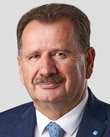

2026-07-22
Projekt wpłynął do Sejmu Druk nr 2867 ↗
w-tokuustawaIII czytanie na posiedzeniu Sejmu (2026-10-22)Sejm 10/2867
| Proces | Sejm kadencja 10, nr 2867 |
|---|---|
| Wpłynął | 2026-07-22 |
| Ostatnia zmiana źródła | 2026-10-23 |
| RCL | legislacja.rcl.gov.pl ↗ |
| Źródło | api.sejm.gov.pl ↗ |
381 zdarzeń

10. kadencja, 64. posiedzenie, 3. dzień - Podsekretarz Stanu w Ministerstwie Sprawiedliwości Dariusz Mazur 10. kadencja, 64. posiedzenie, 3. dzień (04-09-2026) 33. punkt porządku dziennego: Pierwsze czytanie rządowego projektu ustawy o zmianie ustawy - Prawo o ustroju sądów powszechnych oraz niektórych innych ustaw (druk nr 2867). Podsekretarz Stanu w Ministerstwie Sprawiedliwości Dariusz Mazur: Dziękuję. Szanowny Panie Marszałku! Wysoka Izbo! Projekt ma charakter priorytetowy, gdyż realizuje priorytet IDP10 polityki członków Rady Ministrów w zakresie usprawnienia pracy sądów i prokuratury. Zasadnicze cele projektu ustawy. Ustawa ma na celu uregulowanie na nowo dwóch obszarów dotyczących funkcjonowania sądownictwa powszechnego odnoszących się do sytuacji prawnej sędziów. Po pierwsze, chodzi o możliwość dalszego pełnienia służby przez sędziów po osiągnięciu wieku uprawniającego do przejścia w stan spoczynku, w szczególności poprzez wyeliminowanie obowiązku uzyskania zgody Krajowej Rady Sądownictwa na dalsze pełnienie służby po osiągnięciu tego wieku przejścia w stan spoczynku i umożliwienie orzekania po osiągnięciu tegoż wieku w zmniejszonym udziale w przydziale spraw. Po drugie, projekt dotyczy delegowania sędziów, w szczególności delegowań pozaorzeczniczych, poprzez wyeliminowanie możliwości delegowań związanych z wykonywaniem czynności administracyjnych na czas nieokreślony oraz określenie przesłanek branych pod uwagę przy podejmowaniu decyzji o takim delegowaniu. Ponadto projekt realizuje pomniejsze cele, takie jak wyeliminowanie możliwości delegowania sędziów do Kancelarii Prezydenta RP, do urzędu ministra właściwego do spraw zagranicznych - to były przepisy martwe do tej pory - i wprowadzenie możliwości powierzenia sędziemu w stanie spoczynku także funkcji rzecznika dyscyplinarnego ministra sprawiedliwości, jak również zawiera przepisy przejściowe nakierowane na umożliwienie skorzystania z prawa do dalszego pełnienia służby do czasu osiągnięcia 70. roku życia przez tych sędziów, których postępowania w przedmiocie uzyskania zgody na dalsze orzekanie przed Krajową Radą Sądownictwa albo Sądem Najwyższym nie zakończyły się albo którzy nie uzyskali zgody na dalsze zajmowanie stanowiska sędziego, albo się o nią nie ubiegali i pozostają w stanie czynnym. Są też przepisy umożliwiające powrót do czynnej służby tym sędziom, którzy przed dniem wejścia w życie nowelizacji przeszli w stan spoczynku albo zostali przeniesieni w stan spoczynku w związku ze zmianami organizacyjnymi w sądownictwie. Teraz będę mówił bardziej szczegółowo. W zakresie pierwszego z celów ustawy istota zmiany polega na zastąpieniu regulacji, która uzależnia dopuszczalność dalszego orzekania przez sędziego, który osiągnął wiek przejścia w stan spoczynku, od zgody Krajowej Rady Sądownictwa, taką regulacją, która będzie pozostawiała wyłącznie woli sędziego, oczywiście potwierdzonej zdolnością ze względu na stan zdrowia do dalszej służby potwierdzonej przez lekarza, decyzję, czy chce przejść w stan spoczynku, czy chce orzekać nadal, nie dłużej jednak niż do osiągnięcia 70. roku życia. Zmiana ta łączy się z dopuszczalnością obniżenia sędziemu po osiągnięciu 65. roku życia udziału w przydziale spraw wedle jego woli o 25%, 50% albo też 75%, co ma się łączyć z proporcjonalnym do tego obniżeniem wysokości wynagrodzenia. Jeżeli chodzi o część, o jaką wynagrodzenie zostanie obniżone, to w to miejsce będzie wypłacane świadczenie w wysokości równej odpowiedniej części uposażenia spoczynkowego. Wprowadzenie tego rozwiązania ma na celu zwiększenie aktywności zawodowej sędziów po ukończeniu przez nich 65. roku życia i w ten sposób - zwiększenie liczby orzeczników, a więc też przyśpieszenie rozpoznawania spraw. W zakresie drugiego z celów projektu istota zmiany sprowadza się do wyeliminowania możliwości bezterminowych, pozaorzeczniczych delegowań sędziów do Ministerstwa Sprawiedliwości, Krajowej Rady Sądownictwa czy Krajowej Szkoły Sądownictwa i Prokuratury, a także de
10. kadencja, 64. posiedzenie, 3. dzień - Poseł Maciej Tomczykiewicz 10. kadencja, 64. posiedzenie, 3. dzień (04-09-2026) 33. punkt porządku dziennego: Pierwsze czytanie rządowego projektu ustawy o zmianie ustawy - Prawo o ustroju sądów powszechnych oraz niektórych innych ustaw (druk nr 2867). Poseł Maciej Tomczykiewicz: Bardzo dziękuję. Panie Marszałku! Panie Ministrze! Panie marszałku, spóźnione życzenia urodzinowe. Wszystkiego najlepszego, wcześniej nie miałem okazji. Wicemarszałek Szymon Hołownia: Dziękuję bardzo. Kłaniam się. Dziękuję serdecznie. Poseł Maciej Tomczykiewicz: Szanowni Państwo Posłowie! Ten projekt odpowiada na kilka wyzwań. Jedno z tych wyzwań jest związane z kwestią czegoś, co funkcjonowało przez lata, a w mojej opinii nie było dobrym rozwiązaniem. Chodzi o sytuację, w której sędziowie, którzy nie przez kilka lat, ale przez 20 lat, przez prawie 25 lat byli delegowani do Ministerstwa Sprawiedliwości i pracowali tam jako urzędnicy. Państwo polskie stworzyło grupę urzędników o specjalnych przywilejach, kompetencjach. Założenie, jeżeli chodzi o możliwość delegowania sędziów do Ministerstwa Sprawiedliwości było takie, że chciano korzystać z ich fachowej wiedzy sędziowskiej, tak żeby ministerstwo mogło lepiej działać. Natomiast sędziowie, którzy pracują w ministerstwie przez 10, 15 czy 20 lat, tracą kontakt z salą rozpraw, więc ciężko powiedzieć, że wnoszą to wyjątkowe doświadczenie do ministerstwa. Taką pracę powinni wykonywać normalni urzędnicy. I tę kwestię rozwiązujemy. Jednocześnie ta ustawa daje państwu polskiemu, rządowi możliwość korzystania z wieloletniego doświadczenia sędziów, którzy przeszli już w stan spoczynku i w ten sposób będą mogli pracować dla państwa. Rozwiązujemy też inny problem, który pojawił się dopiero za rządów naszych kolegów, którzy uznali, że w grupie sędziów, którzy zaczynają przekraczać 65. rok życia, jest dużo takich niewygodnych dla ówczesnej władzy, których dobrze by się było pozbyć. Stworzyli więc przepisy, które pozwalały tak z palca niewłaściwie obsadzonej Krajowej Radzie Sądownictwa tych sędziów z systemu wyrzucać. I ten projekt nad tymi sędziami się pochyla, ale nie tylko w kwestii tego, co się działo. Ten projekt zabezpiecza też to, że w przyszłości przedstawione zaświadczenie lekarskie będzie gwarancją tego, że sędzia, który czuje się na siłach i chce dalej orzekać, będzie mógł orzekać. Trzecia rzecz to właśnie wykorzystanie tego zasobu, niewypychanie ze względów politycznych, jak nasi poprzednicy, czy jakichkolwiek innych. Chodzi o niewypychanie sędziów, którzy wciąż są sprawni intelektualnie, fizycznie i chcą orzekać, poza system. Potrzebujemy w systemie dobrych, doświadczonych sędziów, którzy przez tak wiele lat to doświadczenie zdobywali i do tego systemu bardzo dużo wnoszą. Projekt ustawy tworzy zachętę finansową do tego, żeby nie odchodzić w stan spoczynku w pierwszym możliwym momencie, tylko faktycznie w tym systemie zostać i dalej pracować dla obywateli Rzeczypospolitej, robić coś dobrego i móc dalej działać zawodowo. Szanowni Państwo! Te rozwiązania przygotowane przez Ministerstwo Sprawiedliwości są dobrymi rozwiązaniami. One też wyrugowują parę rozwiązań, które, jak słusznie stwierdził pan minister, nie były w ogóle stosowane. Takich rzeczy też powinniśmy się z naszego systemu pozbywać. Jako klub Koalicji Obywatelskiej oceniamy ten projekt jako bardzo dobry. Popieramy go, będziemy nad nim dalej pracować. Bardzo dziękuję. (Oklaski) Przebieg posiedzenia
10. kadencja, 64. posiedzenie, 3. dzień - Poseł Paweł Jabłoński 10. kadencja, 64. posiedzenie, 3. dzień (04-09-2026) 33. punkt porządku dziennego: Pierwsze czytanie rządowego projektu ustawy o zmianie ustawy - Prawo o ustroju sądów powszechnych oraz niektórych innych ustaw (druk nr 2867). Poseł Paweł Jabłoński: Dziękuję bardzo. Panie Marszałku! Wysoki Sejmie! Panie Ministrze! Powiem tak, ta ustawa nie jest taka zła, jak na to, co wychodzi z Ministerstwa Sprawiedliwości. Są tutaj pewne dobre elementy, co muszę odnotować z pewnym zadowoleniem. Ale niestety nie jest też tak dobrze, jak to pan minister próbował zarysować. Najpierw o tych dobrych stronach, bo można powiedzieć, są dwie twarze tego projektu. Pierwsza dotyczy kwestii dotyczących stanu spoczynku. Tutaj jest powrót do rozwiązań, które były już wcześniej, czyli mówiąc krótko, zamiast prosić o zgodę Krajową Radę Sądownictwa czy ministra sprawiedliwości, czy kogokolwiek innego, sędzia po prostu będzie składał oświadczenie, że chce orzekać dalej i, z wyjątkiem, jak się rozumiem, sytuacji nadzwyczajnych, np. zdrowotnych, będzie to automatyczne. Uważam, że to nie jest taki zły pomysł. Przypominam, że to w ogóle jest projekt w takim kształcie jak ustawa o ustroju sądów powszechnych z 2007 r. To z inicjatywy prezydenta Lecha Kaczyńskiego został uchwalony. Więc tu akurat nie mam jakiegoś wielkiego problemu z tym, że do takich rozwiązań państwo chcecie wrócić. Zwracam jednakże uwagę na to, że trzeba doprecyzować moim zdaniem przesłanki dotyczące jednak pewnego rodzaju kontroli tego, czy rzeczywiście dany sędzia już w wieku zaawansowanym będzie mógł pewne funkcje wykonywać. Mówimy tu o zaświadczeniu lekarskim. Być może należałoby tę procedurę troszkę doprecyzować. Mam nadzieję, że podczas pracy w komisjach będzie to możliwe. To akurat dobrze, że taki element ta ustawa ma. Niestety ten drugi element, o którym pan minister mówił w drugiej kolejności, a który jest dużo istotniejszy, tutaj jest dużo gorszy. To są delegacje. Panie ministrze, to prawda, że jest dzisiaj tak, że można bezterminowo delegować m.in. do Ministerstwa Sprawiedliwości. Pan, panie ministrze, przecież jest sędzią i jednocześnie ministrem. Jest pan przykładem właśnie takiej sytuacji. Czy to jest dobrze, czy to jest źle? Są różne głosy. Ja uważam, że obecność sędziów w korpusie urzędniczym nie powinna być zasadą. W ogóle należałoby to ograniczyć. Natomiast taka instytucja istnieje i bez szerszej reformy w ogóle, mam wrażenie. Choć od 3 lat państwo mówicie o tym, jak złym rozwiązaniem są te delegacje, to żadnej szerszej reformy nie było. Mamy taką reformę, że pozornie mówicie, że z delegacjami nadmiernymi, bezterminowymi chcecie walczyć, ale jednak tutaj jest bardzo niebezpieczny zapis dotyczący wszystkich innych delegacji, poza tymi do Ministerstwa Sprawiedliwości, czyli m.in. delegacjami do sądów niższego rzędu albo do sądów wyższego rzędu. Otóż ministerstwo wydłuża ten okres delegacji z 2 do 4 lat. Co to oznacza, drodzy państwo? Sędzia delegowany pozostaje na łasce ministra, który go delegował. Ta delegacja może być odwołana. Czyli sędzia delegowany... Przecież sami to wielokrotnie podnosiliście. Trybunał Sprawiedliwości, do którego się odwoływaliście choćby w orzeczeniu C-748/19, wskazywał wprost: sędzia delegowany decyzją ministra, którą minister może cofnąć, nie daje gwarancji niezawisłości. Dzisiaj chcecie tak naprawdę przedłużyć ten okres, w którym sędzia delegowany jest na łasce i niełasce ministra. To jest zwiększanie niezawisłości czy zwiększanie politycznej kontroli nad sędziami, którzy będą delegowani do sądów wyższych, i jak będą orzekać w taki sposób, żeby się ministrowi podobało, to delegacja może nie będzie cofnięta. Tutaj, panie ministrze, nie będziemy się zgadzać. To jest zły kierunek. Nie rozumiem zupełnie tego, dlaczego na ustach mieliście słowa o reformie systemu delegacji. Była mowa w ogóle o tym, żeby zlikwidować delegację w tych najbardziej radykalnych już rozwiązaniach. To byłoby p
10. kadencja, 64. posiedzenie, 3. dzień - Poseł Mirosław Adam Orliński 10. kadencja, 64. posiedzenie, 3. dzień (04-09-2026) 33. punkt porządku dziennego: Pierwsze czytanie rządowego projektu ustawy o zmianie ustawy - Prawo o ustroju sądów powszechnych oraz niektórych innych ustaw (druk nr 2867). Poseł Mirosław Adam Orliński: Szanowny Panie Marszałku! Panie Ministrze! Wysoka Izbo! Szanowni Państwo! W imieniu Klubu Parlamentarnego Polskie Stronnictwo Ludowe przedstawię stanowisko odnośnie do rządowego projektu ustawy o zmianie ustawy - Prawo o ustroju sądów powszechnych oraz niektórych innych ustaw. Rzeczywiście, tak jak to już zostało tutaj powiedziane, projektowana ustawa ma na celu uregulowanie na nowo dwóch obszarów dotyczących funkcjonowania sądownictwa powszechnego, odnoszących się do sytuacji sędziów. Po pierwsze, co zostało już uwypuklone i powiedziane, zasady dalszego orzekania przez sędziego po osiągnięciu wieku przejścia w stan spoczynku, po drugie - to punkt elementarny tego projektu rządowego - zasady delegowania sędziów, przede wszystkim delegacji pozaorzeczniczych, jak było już tutaj przedstawiane, np. do Ministerstwa Sprawiedliwości. Rzeczywiście daje się odczuć, że ten rządowy projekt naprawdę wychodzi naprzeciw oczekiwaniom i zmianom, o których mówimy od jakiegoś czasu: potrzeba uporządkowania statusu sędziów, zwiększenie niezależności oraz ograniczenie sytuacji, w których czynni sędziowie przez długi czas byli np. wyłączeni z orzekania. To, co zmieniamy w tym rządowym projekcie, i my jako klub parlamentarny też to popieramy, to to, że KRS ma zostać wyłączona z decydowania o możliwości dalszego pełnienia służby i działalności sędziego. W obecnym stanie prawnym sędzia przechodzi w stan spoczynku z dniem ukończenia 65 lat, chyba że niepóźniej niż na 6 miesięcy i niewcześniej niż na 12 miesięcy przed ukończeniem tego wieku oświadczy Krajowej Radzie Sądownictwa wolę dalszego zajmowania stanowiska. Odchodzimy od tego w tym projekcie, zmieniamy to. Rzeczywiście zależałoby to, po pierwsze, tak naprawdę od woli sędziego, bo przecież projekt nie narzuca tego, lecz pozostawia tę decyzję właśnie sędziemu, po drugie, od stanu zdrowia, który byłby potwierdzany odpowiednim zaświadczeniem lekarskim. Są to ważne zmiany. Decyzja o kontynuowaniu służby nie powinna być uzależniona od decyzji Krajowej Rady Sądownictwa - przecież często ta decyzja była odwlekana - lecz od decyzji sędziego i od stanu zdrowia. Projekt daje ciekawe rozwiązanie dla sędziów, którzy zdecydowaliby się orzekać po ukończeniu 65. roku życia i złożyliby taki wniosek. Też ciekawym rozwiązaniem - oczywiście to trzeba będzie rozpatrzyć w ramach naszej Komisji Sprawiedliwości i Praw Człowieka - jest rozwiązanie dotyczące możliwości odpowiedniego zmniejszenia zakresu obciążenia orzeczniczego danego sędziego. Jako Klub Parlamentarny Polskie Stronnictwo Ludowe uważamy, że tego typu projekty, działania są jak najbardziej potrzebne. To wszystko ma usprawnić wymiar sprawiedliwości. Tego też oczekują obywatele. Dajemy szansę, możliwość danemu sędziemu decydowania, czy on jeszcze będzie chciał orzekać i w jakim zakresie. Tutaj są widełki, możliwości. Wydaje się więc, że ten projekt jest jak najbardziej słuszny. Dziękuję. (Oklaski) Przebieg posiedzenia
10. kadencja, 64. posiedzenie, 3. dzień - Poseł Sławomir Ćwik 10. kadencja, 64. posiedzenie, 3. dzień (04-09-2026) 33. punkt porządku dziennego: Pierwsze czytanie rządowego projektu ustawy o zmianie ustawy - Prawo o ustroju sądów powszechnych oraz niektórych innych ustaw (druk nr 2867). Poseł Sławomir Ćwik: Szanowny Panie Marszałku! Wysoka Izbo! Panie Ministrze! Mam zaszczyt w imieniu klubu Centrum przedstawić stanowisko klubu wobec rządowego projektu nowelizacji ustawy o ustroju sądów powszechnych i niektórych innych ustaw. Ta nowelizacja przede wszystkim skupia się na dwóch kwestiach. Na kwestii uregulowania dalszego orzekania przez sędziów, którzy osiągnęli wiek 65 lat, oraz na kwestii delegacji pozaorzeczniczych dla sędziów. Jeżeli chodzi o kwestię wieku, to dzisiaj aby sędzia po osiągnięciu wieku emerytalnego, wieku 65 lat, mógł nadal orzekać, musi mieć zgodę Krajowej Rady Sądownictwa i oczywiście dobry stan zdrowia. Czyli jest to uzależnione od KRS-u. Dana osoba posiada wiedzę, doświadczenie, praktykę sędziowską, dobry stan zdrowia i chce orzekać. A więc nienaturalne jest, aby jeszcze angażować tutaj dodatkowy organ państwa, organ konstytucyjny, jakim jest Krajowa Rada Sądownictwa. W tym zakresie tę zmianę oceniam ze wszech miar jako zasadną. Druga kwestia to jest kwestia delegacji pozaorzeczniczych. Ich idea miała być taka, że jeżeli toczą się np. w ministerstwie prace nad istotną nowelizacją, zmianą kodeksową, to trzeba zaangażować w te prace w ramach ministerstwa doświadczonych sędziów z bogatą praktyką orzeczniczą, którzy np. specjalizują się w danego typu sprawach, aby przygotowanie tej nowelizacji, przygotowanie tych rozwiązań było lepsze. Chodzi też o kwestie organizacyjne dotyczące sądów, żeby wiedzieć, w jaki sposób to przeprowadzić z uwzględnieniem praktyki, doświadczenia zawodowego sędziów, którzy orzekają w sądach. Faktycznie zaproponowana tutaj zmiana w postaci ograniczenia czasu delegacji pozaorzeczniczej do 4 lat jest ze wszech miar zasadna. Można by się było nawet zastanawiać, czy powinna być krótsza, czy nie, ale przyjmijmy, że niektóre procesy, procedury trwają dłużej. Ukróci to zjawisko, z którym mamy do czynienia dzisiaj, polegające na tym, że istnieją sędziowie, którzy przez dziesięciolecia pracują w Ministerstwie Sprawiedliwości, co całkowicie wypacza przygotowaną ideę instytucji. Nowelizacja wyklucza możliwość delegowania sędziów do działalności pozaorzeczniczej do innych organów, takich jak m.in. Kancelaria Prezydenta Rzeczypospolitej Polskiej. Z tego względu klub Centrum ocenia przedłożony projekt nowelizacji ustawy o ustroju sądów powszechnych jako właściwy. Z przyjemnością będziemy dalej nad nim procedować w czasie prac przed właściwym posiedzeniem komisji. Myślę, że to jest dobry kierunek zmian. Dziękuję bardzo. Przebieg posiedzenia
10. kadencja, 64. posiedzenie, 3. dzień - Poseł Jarosław Sachajko 10. kadencja, 64. posiedzenie, 3. dzień (04-09-2026) 33. punkt porządku dziennego: Pierwsze czytanie rządowego projektu ustawy o zmianie ustawy - Prawo o ustroju sądów powszechnych oraz niektórych innych ustaw (druk nr 2867). Poseł Jarosław Sachajko: Panie Marszałku! Wysoka Izbo! Panie Ministrze! Ten projekt wychodzi od fałszywego założenia, że problemem polskiego sądownictwa jest brak sędziów. Nie. Polska ma ok. 28 sędziów na 100 tys. mieszkańców, czyli wyraźnie więcej niż wynosi unijna mediana. Sędziowie są również bardzo dobrze wynagradzani, a jednocześnie obywatel coraz dłużej czeka na wyrok. I właśnie to jest prawdziwy problem. Mamy dużo sędziów, dużo pieniędzy i ogromną przewlekłość. Nie potrzebujemy zatrzymywać za wszelką cenę kolejnych sędziów po 65. roku życia. Trzeba wreszcie odpowiedzieć: Dlaczego sędzia wykonuje tysiące czynności, które może wykonywać referendarz, urzędnik sądowy, notariusz albo inny prawnik? Dlaczego najwyżej wykwalifikowany i jeden z najlepiej opłacanych prawników w państwie ma zajmować się papierologią zamiast wydawaniem wyroków? Komu właściwie zależy na tym, żeby tego bałaganu nie uporządkować? Jest jeszcze drugi problem, o którym środowisko prawnicze rozmawia bardzo niechętnie - dobór kadr. Na studiach prawniczych od lat krąży taki dowcip. Egzaminator pyta kandydata: Dlaczego chce pan studiować prawo? A kandydat odpowiada: tato, daj spokój. To jest dowcip, ale przestałby być śmieszny, gdyby obywatele mieli pewność, że o dostępie do najważniejszych, wpływowych zawodów prawniczych zawsze decydowały wyłącznie kompetencje, a nie środowisko, znajomości czy rodzinne tradycje, tak jak w tym dowcipie. Dlatego zamiast kolejnej wojny o to, która partia kontroluje KRS, trzeba przeciąć ten spór raz na zawsze. Członkowie Krajowej Rady Sądownictwa powinni otrzymywać demokratyczny mandat w wyborach powszechnych. Prezydenta wybierają obywatele, posła wybierają obywatele, samorządowca wybierają obywatele, ale na władzę, która może odebrać im majątek, wolność, rozstrzygać o ich rodzinach, która przede wszystkim ma chronić ich przed nadużyciami autorytarnego państwa, obywatele nie mają żadnego bezpośredniego wpływu. Dlatego pytam: Czy naprawdę uważacie, że problemem polskiego sądownictwa jest brak sędziów? Przecież Polska ma relatywnie dużo sędziów na 100 tys. mieszkańców, wyraźnie więcej niż przeciętne kraje Unii Europejskiej. Czy jednak problemem nie jest system, który ma licznych dobrze opłacanych sędziów, ale jednocześnie siedzą oni w papierach po uszy? Dziękuję. (Oklaski) Przebieg posiedzenia
10. kadencja, 64. posiedzenie, 3. dzień - Poseł Michał Woś 10. kadencja, 64. posiedzenie, 3. dzień (04-09-2026) 33. punkt porządku dziennego: Pierwsze czytanie rządowego projektu ustawy o zmianie ustawy - Prawo o ustroju sądów powszechnych oraz niektórych innych ustaw (druk nr 2867). Poseł Michał Woś: Myślałem, że pan marszałek wspomni o obiecanych życzeniach urodzinowych. Wicemarszałek Szymon Hołownia: Trzeba powiedzieć, bo mi to powiedział, że spóźnił się, bo pisał dla mnie życzenia. (Głos z sali: Ha, ha, ha!) Poseł Michał Woś: Tylko takim sposobem do marszałka można trafić. Wicemarszałek Szymon Hołownia: Oj tam, oj tam. Poseł Michał Woś: Wszystkiego najlepszego. Życzę panu dużo, dużo zdrowia, panie marszałku... Wicemarszałek Szymon Hołownia: Dziękuję. Zwłaszcza psychicznego. Poseł Michał Woś: ...i cierpliwości w tej koalicji, która łamie kręgosłupy swoim współkoalicjantom. Wysoka Izbo! Panie Marszałku! Panie Ministrze! Ten projekt dotyczy dwóch spraw. Jedna to kwestie stanu spoczynku i zgody Krajowej Rady Sądownictwa. Druga to delegacje sędziowskie do ministerstwa czy szerzej do administracji, do innej władzy niż władza sądownicza. W obu tych sprawach mimo pięknych słów, mimo bogatego uzasadnienia, mimo wielu przedstawionych argumentów w żaden sposób nie chodzi o usprawnienie sądownictwa. Państwo o tym wiedzą. W obu tych sprawach chodzi niestety o brutalną politykę, którą uprawiają tzw. politycy w togach i przedstawiciele stowarzyszeń sędziowskich. Przecież nawet pan minister jest czy był, nie wiem, szefem jednego z takich stowarzyszeń sędziowskich, których członkowie często są określani mianem polityków w togach. Otóż tę ustawę można nazwać mianem lex Najjar. To mało znane nazwisko, ale znane w świecie prawniczym. Pani Beata Najjar to prezes Sądu Okręgowego w Warszawie. Można powiedzieć, że to uzurpatorka. Dlaczego? Dlatego że przeszła w stan spoczynku, osiągnąwszy 65. rok życia, i postanowiła nie realizować prawa, do którego w uzasadnieniu tak szeroko się odnosicie, mówiąc, że to jest w obecnej ustawie, że tak trzeba robić. Postanowiła tego prawa nie realizować, czyli zamknąć oczy, udawać, że ta ustawa nie funkcjonuje, nie istnieje, i dalej być sędzią, mimo że nie dopełniła obowiązku zwrócenia się do Krajowej Rady Sądownictwa o wyrażenie zgody na to, żeby sędzią mogła być. Mimo że nie jest sędzią, tzn. z perspektywy prawnej przeszła w stan spoczynku, zaprzeczacie rzeczywistości. Jeszcze pan Bodnar postanowił powołać tę panią na prezesa Sądu Okręgowego w Warszawie. Po co? M.in. po to, żeby mieć wpływ na te wszystkie rzeczy. Przecież wyrzuciliście w kosmos system losowego przydziału spraw po to, żeby właśnie ten prezes miał w tej sprawie kompetencje. Tutaj chodzi o jedno - o to, żebyście dali niektórym sędziom możliwość wyjścia z twarzą z tego gigantycznego bajzlu, bałaganu, w który popadli, udając, że przepis, który cieszy się domniemaniem konstytucyjności, zgodnie z którym są zobowiązani składać wniosek o przedłużenie możliwości swojego sędziowania, nie był przez nich realizowany, mimo że jest obowiązujący, co sami przyznajecie w uzasadnieniu tej ustawy. Stąd to jest jeden wielki skandal, że w ten sposób próbujecie teraz obejść tę sytuację czy jakoś przepisy przejściowe doprowadzić do tego, żeby tę sprawę próbować uzdrowić, mimo że tamci ludzie łamią prawo. I druga sprawa, dotycząca delegacji sędziowskich. Przez lata mówiliście, że wszystkich sędziów należy z ministerstwa usunąć, należy skasować w ogóle delegacje ministerialne, a okazuje się, że jak przyszedł pan Tusk, pan Bodnar, pan Żurek, to nawet nie jeden sędzia jest delegowany na ministra, ale dwóch ministrów jest sędziami. Nigdy tak nie było w historii: dwóch panów wiceministrów to sędziowie delegowani do ministerstwa (Dzwonek), już nie mówiąc o panu Żurku. Hipokryzja bije na każdym kroku z każdego waszego działania. Bardzo dziękuję, Wysoki Sejmie i panie marszałku, za możliwość złożenia panu życzeń. Przebieg posiedzenia
10. kadencja, 64. posiedzenie, 3. dzień - Poseł Marcin Józefaciuk 10. kadencja, 64. posiedzenie, 3. dzień (04-09-2026) 33. punkt porządku dziennego: Pierwsze czytanie rządowego projektu ustawy o zmianie ustawy - Prawo o ustroju sądów powszechnych oraz niektórych innych ustaw (druk nr 2867). Poseł Marcin Józefaciuk: Szanowny Panie Marszałku! Wysoka Izbo! Ojej, jak wysoko. Wicemarszałek Szymon Hołownia: Bo to Wysoka Izba. Poseł Marcin Józefaciuk: Tak, Wysoka Izba. Mam kilka pytań. Dlaczego projektodawca powołuje się na wyrok TSUE w sprawie C192/18 jako argument przemawiający za zmianą zasad dalszego orzekania, a pomija wynikający z tego samego wyroku problem nierównego wieku przechodzenia w stan spoczynku kobiet i mężczyzn? Kto podejmuje sprawy, których nie otrzyma sędzia korzystający ze zmniejszenia przydziału o 50% albo 75% i czy pozostała część jego etatu będzie mogła zostać rzeczywiście obsadzona? Jak projektodawca uzasadnia rozwiązanie, zgodnie z którym sędzia wykonujący 25% normalnego przydziału spraw może otrzymać łącznie równowartość ponad 81% pełnego wynagrodzenia zasadniczego i dodatku za wysługę lat? Dziękuję. Przebieg posiedzenia
10. kadencja, 64. posiedzenie, 3. dzień - Poseł Jarosław Sachajko 10. kadencja, 64. posiedzenie, 3. dzień (04-09-2026) 33. punkt porządku dziennego: Pierwsze czytanie rządowego projektu ustawy o zmianie ustawy - Prawo o ustroju sądów powszechnych oraz niektórych innych ustaw (druk nr 2867). Poseł Jarosław Sachajko: Panie Marszałku! Wysoka Izbo! Panie Ministrze! Rząd przedstawia ten projekt tak, jakby problemem polskich sądów był brak sędziów. Tymczasem Polska ma relatywnie bardzo dużo sędziów, dobrze opłacanych, a mimo to obywatele coraz dłużej czekają na rozstrzygnięcia. Problem nie leży więc w liczbie etatów, tylko w fatalnej organizacji pracy, biurokracji, wykorzystywaniu sędziów do czynności, które mogą wykonywać referendarze, urzędnicy czy inni prawnicy. Sam rząd przyznaje, że setki sędziów było delegowanych poza sądy. Zamiast kolejnych przywilejów i przedłużania pracy po 65. roku życia trzeba wreszcie rozliczać sędziów z efektywności i ograniczyć im niepotrzebną biurokrację. Panie ministrze, skoro mamy dużo sędziów, wysokie wynagrodzenia i ogromną przewlekłość postępowań, to kto odpowiada za to, że Polacy latami czekają na rozstrzygnięcie spraw? Dziękuję. Przebieg posiedzenia
10. kadencja, 64. posiedzenie, 3. dzień - Poseł Maciej Tomczykiewicz 10. kadencja, 64. posiedzenie, 3. dzień (04-09-2026) 33. punkt porządku dziennego: Pierwsze czytanie rządowego projektu ustawy o zmianie ustawy - Prawo o ustroju sądów powszechnych oraz niektórych innych ustaw (druk nr 2867). Poseł Maciej Tomczykiewicz: Bardzo dziękuję. Panie Marszałku! Panie Pośle Woś! Nie mogłem się powstrzymać po pana wystąpieniu... (Poseł Michał Woś: To są pytania do wnioskodawców.) ...bo może nie wszyscy pamiętają... (Poseł Michał Woś: Pytania do wnioskodawców niech pan zada.) ...ale PiS stworzył taki system, w którym, jak sędzia chciał po 65. roku życia dalej orzekać, to musiał się z tym zgłosić do Krajowej Rady Sądownictwa, która była nieprawidłowo obsadzona przez PiS-owskich nominatów. I żeby jeszcze ci wasi nominaci udawali, że robią tam coś pożytecznego, gdyby faktycznie badali, czy sędzia, który chce dalej orzekać, spełnia warunki, czy jest zdrowy, sprawny, czy jest w stanie dalej orzekać. Natomiast pana nominatów w tej nielegalnej KRS to nie interesowało. (Poseł Michał Woś: Moich?) Tak, pana. Nikogo to nie interesowało, czy dany sędzia jest w stanie orzekać, czy nie jest. Nie prowadzono żadnego badania stanu zdrowia, nie zlecano żadnych opinii lekarskich (Dzwonek) do przedstawienia. (Poseł Michał Woś: Tak?) Byli oni tam tylko po to, żeby wyrugować każdego, kto staje na waszej drodze. (Oklaski) Przebieg posiedzenia
10. kadencja, 64. posiedzenie, 3. dzień - Poseł Michał Woś 10. kadencja, 64. posiedzenie, 3. dzień (04-09-2026) 33. punkt porządku dziennego: Pierwsze czytanie rządowego projektu ustawy o zmianie ustawy - Prawo o ustroju sądów powszechnych oraz niektórych innych ustaw (druk nr 2867). Poseł Michał Woś: Drodzy Rodacy! Doskonale wiecie, że kiedy Prawo i Sprawiedliwość rządziło, to była neo-KRS, a kiedy są nominaci Platformy, sędziowie skierowani tam przez Tuska, większość Donalda Tuska, to już magicznie nie jest to neo-KRS, tylko jest to Krajowa Rada Sądownictwa, a w ustawach nie zmieniono ani przecinka. W tej chwili nominaci polityczni Platformy Obywatelskiej już nie są tak nazywani przez posła Tomczykiewicza, bo postanowił uciec z sali sejmowej po zadaniu tego pytania. Mam jedno pytanie. Platforma obiecywała ograniczenie delegacji sędziów poza sądownictwo, czyli m.in. do Ministerstwa Sprawiedliwości. Proszę, panie ministrze, konkretnie podać, ilu sędziów było delegowanych poza sądownictwo na dzień 1 stycznia 2024 r., na dzień 1 stycznia 2025 r. i na dzień 1 stycznia 2026 r. Proszę pokazać opinii publicznej, jak radykalna zmiana, radykalna skala ograniczeń nastąpiła. Obiecywaliście to przecież Polakom. Proszę się pochwalić, że nigdy w historii (Dzwonek) nie było tak, żeby dwóch wiceministrów było sędziami delegowanymi do ministerstwa. Dziękuję. Przebieg posiedzenia
10. kadencja, 64. posiedzenie, 3. dzień - Podsekretarz Stanu w Ministerstwie Sprawiedliwości Dariusz Mazur 10. kadencja, 64. posiedzenie, 3. dzień (04-09-2026) 33. punkt porządku dziennego: Pierwsze czytanie rządowego projektu ustawy o zmianie ustawy - Prawo o ustroju sądów powszechnych oraz niektórych innych ustaw (druk nr 2867). Podsekretarz Stanu w Ministerstwie Sprawiedliwości Dariusz Mazur: Dziękuję bardzo. Panie Marszałku! Szanowni Państwo! Jeśli chodzi o pytanie pana posła Józefaciuka, to istotnie tak jest, że ta nowelizacja nie w pełnym zakresie realizuje powołany wyrok TSUE. Trzeba natomiast zaznaczyć, że zasadniczo kobiety mogą orzekać do 65. roku życia jako sędziowie, natomiast to, że w wieku 60 lat mogą przejść w stan spoczynku, jest tylko uprawnieniem, z którego nie wszystkie panie sędziowie korzystają, a więc może to nie jest aż tak duży problem, natomiast rzeczywiście nie do końca tutaj ten wyrok jest implementowany. Na pytanie drugie dość trudno odpowiedzieć. Jego sens był mniej więcej taki: Kto orzeka za sędziów, w przypadku których wpływ spraw jest częściowy? Pozostali sędziowie. Teraz również mamy takie sytuacje, że sędziowie mają stanowiska funkcyjne: prezesa, przewodniczącego wydziału, wizytatora. W ich przypadku wpływ spraw jest ograniczony - do różnych wysokości: 20%, 40%, 50% itd. Po prostu z całości spraw wpływających do danego wydziału... Jedni sędziowie uczestniczą w losowaniu w pełnym zakresie, a inni uczestniczą np. w 80%. Sprawy, których nie załatwia osoba orzekająca przy ograniczonym wpływie, rozkładają się odpowiednio na pozostałych orzekających sędziów. Pytanie pana posła Sachajki: Kto odpowiada za przewlekłość spraw w sądach? No cóż, przewlekłość to nie jest problem, który powstał wczoraj, przedwczoraj czy tydzień temu. Chcę zwrócić uwagę na to, że w porównaniu z poprzednimi dwoma kadencjami parlamentu w tej kadencji podjęto szereg działań zmierzających do tego, żeby usprawnić działalność sądów, czego efekty zaczynają być widoczne, i to nawet pomimo blokowania zmian legislacyjnych przez pana prezydenta czy niemożności odrzucenia weta, choćby w zakresie uzdrowienia statusu sędziów. Mogę podać choćby taki przykład, jak bardzo poważne zwiększenie liczby asystentów współpracujących z sędziami. Było ich niespełna 4 tys. Teraz, po 2,5 latach rządów, jest ich ponad 5,5 tys. czy nawet blisko 6 tys. To wyraźnie usprawni pracę sądów. (Poseł Michał Woś: Kosztem zlikwidowania 125 etatów sądowych... sędziowskich.) Wicemarszałek Szymon Hołownia: Panie pośle... (Poseł Michał Woś: Zlikwidowali państwo 125 etatów sędziowskich.) Panie pośle, dyskusja była, teraz wypowiada się minister. Podsekretarz Stanu w Ministerstwie Sprawiedliwości Dariusz Mazur: Mówimy raczej o ich przekształceniu w etaty referendarskie, więc to nie jest tak, że to zostało wyrzucone do kosza. Skoro nie można było powoływać sędziów... (Wypowiedź poza mikrofonem) Nie, według mojej najlepszej wiedzy to było przekształcenie w etaty referendarskie. Odnosząc się do pytania pana posła Wosia: możliwość delegowania sądów pozaorzeczniczo... (Poseł Michał Woś: Sędziów.) ...w tym projekcie ustawy jednak wyraźnie zmniejszono, zarówno skracając maksymalny czas delegacji pozaorzeczniczej, jak i eliminując możliwość delegowania czy do Kancelarii Prezydenta, czy do ministra właściwego do spraw zagranicznych. Co do pytania odnośnie do tego, jak ta liczba wyglądała rok po roku, to takich precyzyjnych danych nie mam... (Poseł Michał Woś: To proszę na piśmie, panie ministrze.) ...więc na to odpowiemy na piśmie, oczywiście. (Poseł Michał Woś: Dziękuję.) Kiedy przyszedłem do ministerstwa pod koniec 2023 r., z tego, co pamiętam, było chyba ok. 140 delegowanych sędziów, w tej chwili jest 122, więc jest spadek. On może nie jest jakiś gwałtowny, ale jest. Szczegółowe dane podamy na piśmie. Dziękuję bardzo. (Oklaski) Przebieg posiedzenia
10. kadencja, 67. posiedzenie, 2. dzień - Poseł Sprawozdawca Dominik Jaśkowiec 10. kadencja, 67. posiedzenie, 2. dzień (21-10-2026) 14. punkt porządku dziennego: Sprawozdanie Komisji Sprawiedliwości i Praw Człowieka o rządowym projekcie ustawy o zmianie ustawy - Prawo o ustroju sądów powszechnych oraz niektórych innych ustaw (druki nr 2867 i 3075). Poseł Sprawozdawca Dominik Jaśkowiec: Panie Marszałku! Wysoka Izbo! Mam zaszczyt przedstawić sprawozdanie Komisji Sprawiedliwości i Praw Człowieka o rządowym projekcie ustawy o zmianie ustawy - Prawo o ustroju sądów powszechnych oraz niektórych innych ustaw, druki sejmowe nr 2867 i 3075. Omawiane przedłożenie ma na celu uregulowanie na nowo dwóch obszarów dotyczących funkcjonowania sądownictwa powszechnego odnoszących się do sytuacji prawnej sędziów: po pierwsze, możliwości dalszego pełnienia służby przez sędziego po osiągnięciu wieku uprawniającego go do przejścia w stan spoczynku, po drugie, delegowań, w szczególności delegowań pozaorzeczniczych. W okresie najbliższych 5 lat może w Polsce nastąpić gwałtowne zwiększenie liczby sędziów odchodzących w stan spoczynku, a proces ten najbardziej dotknie sądów okręgowych i apelacyjnych i w nie dotkliwie uderzy. Statystycznie w tych sądach pracują bowiem najstarsi wiekiem sędziowie. Sędziowie, którzy zdecydowaliby się na dalsze orzekanie, niewątpliwie przyczyniliby się do poprawy sprawności rozpoznania spraw w sądach powszechnych. Obecne rozwiązania prawne dotyczące możliwości przedłużenia orzekania przez sędziów po osiągnięciu wieku uprawniającego do przejścia w stan spoczynku mogą zniechęcać sędziów do podejmowania takich decyzji, czyli do tego, aby dalej zajmowali stanowisko sędziego, ponieważ pozytywna decyzja Krajowej Rady Sądownictwa w tym przedmiocie ma charakter fakultatywny. Przesłanki wyrażenia przez radę zgody na pozostanie na stanowisku ustawa określa w sposób nieprecyzyjny i niejasny. Kolejnym istotnym czynnikiem zniechęcającym sędziów do wystąpienia do KRS z wnioskiem o zgodę na dalsze orzekanie jest brak terminu przyjęcia uchwały w przedmiocie dalszego zajmowania stanowiska przez sędziego. Proponowane w omawianym projekcie ustawy rozwiązanie, zgodnie z którym możliwość dalszego orzekania przez sędziego po ukończeniu 65. roku życia nie będzie wymagała zgody Krajowej Rady Sądownictwa, ale będzie uzależniona wyłącznie od indywidualnej decyzji sędziego oraz możliwości dalszego pełnienia obowiązków sędziowskich ocenianych przez właściwego specjalistę z zakresu medycyny, bez prawa ingerencji w tym zakresie przez jakikolwiek organ, jest najwłaściwsza nie tylko z punktu widzenia konstytucyjnych zasad niezawisłości sędziów i niezawisłości sądów, ale również z perspektywy możliwie jak najszerszego korzystania przez wymiar sprawiedliwości z sędziów posiadających duże doświadczenie zawodowe. W odniesieniu do drugiej zaproponowanej zmiany dotyczącej instytucji delegowania sędziów należy wskazać, że instytucja ta służy czasowemu zapewnieniu właściwego funkcjonowania innej dotkniętej brakami kadrowymi jednostki bądź ma na celu wykorzystanie wiedzy i kompetencji delegowanej osoby do realizacji określonego celu. W okresie pomiędzy 2013 r. a 2023 r. liczba osób delegowanych z sądów powszechnych do Ministerstwa Sprawiedliwości wzrosła ze 161 osób - to oczywiście dane za rok 2013 - do 388 osób w 2023 r., z czego większość delegowanych sędziów stanowiła kadra orzecznicza. Ponadto nastąpił także wzrost liczby osób delegowanych z sądów powszechnych do wykonywania czynności administracyjnych w innych jednostkach, poza Ministerstwem Sprawiedliwości, nienależących do systemu sądownictwa powszechnego: z 22 do 55 osób. Niejako więc pozbawiano aparat orzeczniczy sędziów, których kierowano do działań administracyjnych i pozaorzeczniczych. Należy zauważyć, że delegacje do Ministerstwa Sprawiedliwości i innych podległych ministrowi sprawiedliwości instytucji nie powinny służyć łagodzeniu niedoborów kadrowych, lecz powinny stanowić dodatkowe meryto
10. kadencja, 67. posiedzenie, 2. dzień - Poseł Maciej Tomczykiewicz 10. kadencja, 67. posiedzenie, 2. dzień (21-10-2026) 14. punkt porządku dziennego: Sprawozdanie Komisji Sprawiedliwości i Praw Człowieka o rządowym projekcie ustawy o zmianie ustawy - Prawo o ustroju sądów powszechnych oraz niektórych innych ustaw (druki nr 2867 i 3075). Poseł Maciej Tomczykiewicz: Dziękuję bardzo. Panie Marszałku! Wysoka Izbo! Pochylamy się dzisiaj nad projektem rozwiązującym problem, który w pewnym sensie kiedyś nie występował. Jeden z tych problemów, nad którymi dzisiaj się pochylamy, to kwestia przedłużenia orzekania sędziego po osiągnięciu wieku, który normalnie skutkowałby przejściem w stan spoczynku. Zazwyczaj dotyczy to sędziów, którzy są zdrowi, często chętni do dalszej pracy dla Rzeczypospolitej, do orzekania. Kiedyś było tak, że te osoby składały stosowny wniosek i bez większego problemu dostawały prawo dalszego orzekania, mogły spokojnie wykonywać swoją pracę. Potem niestety przyszło Prawo i Sprawiedliwość, razem ze swoimi świetnymi pomysłami, z panem Michałem W., i stwierdziło: Zmieniamy zasady gry. Już nie jest tak, że każdy sędzia gotowy dalej orzekać, w pełni sił, może dalej orzekać. Nie, panowie z PiS-u mówili ˝z palca˝: Temu wolno, temu nie wolno. Zaczęła się procedura przed Krajową Radą Sądownictwa. Kiedyś normalna, pod neo-KRS stała się patologiczna. Bo co decydowało o tym, czy sędzia może dalej orzekać po osiągnięciu tego wieku? Nie warunki zdrowotne, siła, gotowość do dalszego orzekania, tylko zdanie partii. Neo-KRS obsadzony przez waszych kolegów, panie Woś, nie pochylał się nad opiniami lekarzy o stanie zdrowia. To ich w ogóle nie interesowało. Każdy, kto chociaż odrobinę przyglądał się pracom neo-KRS-u w tym zakresie, to widział. Ich nie interesował stan zdrowia, który powinien być przesłanką dla dalszego orzekania. Waszych kolegów i was interesowało, jak ten sędzia wcześniej orzekał, czy stawał w obronie praworządności. W związku z tym, żeby już więcej nie było tego problemu... Teraz on nie występuje, jest prawidłowo obsadzona KRS i mogłoby to normalnie funkcjonować, ale chodzi o to, żeby zabezpieczyć się na przyszłość. Ten projekt ustawy sprawia, że już nie będzie uznaniowości w tym procesie, nie będzie wyrażania zgody na dalsze orzekanie. Sędzia, jeśli przedstawi stosowne dokumenty potwierdzające, że jest zdrowy i zdolny do dalszego orzekania, od jedynej osoby, która jest w stanie to stwierdzić, czyli od lekarza, będzie mógł dalej orzekać. Drugim problemem, który rozwiązujemy - ten problem występował już od lat - jest kwestia delegacji sędziowskich. Niestety doszło do tego, że do Ministerstwa Sprawiedliwości, oprócz sędziów, którzy tam trafiali, żeby wykonać konkretną robotę, którzy znali się na jakiejś konkretnej działce i mieli pomóc ministerstwu tę działkę zreformować, trafiali ludzie, dajmy na to, na przechowanie. Do tego często trafiali tam ludzie, którzy stamtąd do orzekania nie wracali. Szanowni państwo, jak sędzia trafia na delegację i jest w tej delegacji 2, 3, 4 lata, to ma wiedzę, którą wyniósł z sali sądowej, z praktyki. A jaką wiedzę sędziowską ma sędzia, który od 20 czy 25 lat nie widział sali sądowej? Żadnej. On staje się zwykłym urzędnikiem, więc nie ma potrzeby, żeby funkcjonował w tym systemie jako sędzia. Jeżeli ministerstwo potrzebuje urzędników, powinno zatrudniać urzędników. Ta ustawa zmierza w tym kierunku. Okresy delegacji będą wynosić 4 lata, ewentualne przedłużenie na dalszy okres nastąpi pod warunkiem, że wrócą do orzekania i z powrotem w tym sądzie będą orzekać, będą pracować, będą rozstrzygać sprawy obywateli. Tak to powinno wyglądać: sędzia jest delegowany tylko wtedy, kiedy jest naprawdę, naprawdę potrzebny. W tej ustawie jest jeszcze trzecia rzecz: zachęcamy sędziów, którzy mogą przejść w stan spoczynku, do tego (Dzwonek), żeby kontynuowali swoją pracę orzeczniczą. Panie Marszałku! Na pana ręce w imieniu klubu składam stosowne poprawki. Przebieg posiedzenia
10. kadencja, 67. posiedzenie, 2. dzień - Poseł Michał Woś 10. kadencja, 67. posiedzenie, 2. dzień (21-10-2026) 14. punkt porządku dziennego: Sprawozdanie Komisji Sprawiedliwości i Praw Człowieka o rządowym projekcie ustawy o zmianie ustawy - Prawo o ustroju sądów powszechnych oraz niektórych innych ustaw (druki nr 2867 i 3075). Poseł Michał Woś: Bardzo dziękuję. Panie Marszałku! Wysoki Sejmie! Jak Platforma Obywatelska przychodzi z czymkolwiek, to znaczy, że jak zwykle kłamie. Bo intencją tej ustawy nie jest usprawnienie sądownictwa. Gdyby intencją tej ustawy było usprawnienie sądownictwa, ogłosilibyśmy konkursy i obsadzili blisko tysiąc wakatów w polskich sądach po to, żeby te sprawy w końcu ruszyły. Gdyby intencją tej ustawy było usprawnienie pracy polskich sądów, zajęlibyście się tym, żeby delegacji do Ministerstwa Sprawiedliwości ubyło, bo obiecywaliście, że ich ubędzie. (Poseł Maciej Tomczykiewicz: Ubyło!) Dalej jest kilkaset, panie pośle, osób na tej delegacji. Co więcej, nigdy w historii nie było tak, żeby w tym samym czasie w ministerstwie w randze wiceministrów było aż dwóch sędziów. Zawsze był jeden sędzia, teraz jest dwóch. Już nie liczę nawet pana Żurka jako byłego sędziego i prokuratora generalnego. Oczywiście najsłynniejszym kwiatem tej delegacji jest pani Wrzosek. Powiedzcie, co ona tam robi - nie jako sędzia, jako prokurator. Szanowni Państwo! Celem tej ustawy jest zalegalizowanie słynnego procederu, lex Najjar. Prezes warszawskiego sądu okręgowego przeszła w stan spoczynku, osiągając 65. rok życia. Mimo że przeszła w stan spoczynku, postanowiliście udawać, że dalej jest czynnym sędziom. Co więcej, postanowiliście zrobić z tejże sędzi prezesa Sądu Okręgowego w Warszawie. Szanowni Państwo! Problem delegacji oczywiście powinien być uporządkowany, rozwiązany. Można nawet powiedzieć, że jakieś sensowne dyskusje nad tym projektem się toczyły. Ale paradoksalnie największym zagrożeniem odnośnie do tej ustawy, związanej z przejściem w stan spoczynku w wieku 65 lat, z tym automatyzmem, jest uprawnienie, które do tej ustawy chcecie wrzucić. Jako Prawo i Sprawiedliwość w tej sprawie, Wysoka Izbo, współpracowaliśmy z posłem Zimochem, chyba pierwszy raz w historii tej Izby, bo rzeczywiście zwracamy uwagę dokładnie na to samo. Jeżeli lekarz stwierdza, że sędzia po 65. roku życia jest w pełni sił fizycznych i umysłowych ku temu, żeby dalej pełnić ten urząd, chce pełnić ten urząd, to niech ten urząd pełni w pełnym wymiarze wpływu, a nie tak, że on sobie będzie wybierał, ile będzie orzekał. Najpierw proponowaliście 75, 50, 25, potem wprowadziliście poprawki, nie zapoznaliśmy się z tymi nowymi poprawkami, które ograniczyły to wyłącznie do tego 50-procentowego wpływu. I jaki jest tego skutek? Otóż w bardzo wielu wydziałach w Polsce, i ministerstwo to wie, są wydziały dwuosobowe, czasem trzyosobowe. To oznacza dwa lub trzy etaty, które tam są. Drodzy państwo, doskonale o tym wiecie, że jeżeli sędzia nie przejdzie w stan spoczynku, tylko przedłuży swoje orzekanie, będzie orzekał po 65. roku życia i będzie miał wpływ na poziomie 50%, to będzie oznaczało, że w wydziale dwuosobowym sprawy będą rozpatrywane jeszcze dłużej, jeszcze bardziej przewlekle niż teraz. Bo nie dodacie tam drugiego czy trzeciego etatu, tylko zamiast 200% wydolności przy dwóch sędziach, będzie 150% wydolności przy dwóch sędziach. Czyli 50% spraw będzie dłużej rozpatrywanych, później będą wpływać do rozpatrzenia. I to jest oczywisty skutek tej ustawy. Dlatego nawet jeżeli proponujecie coś, nad czym można by się pochylić, nad czym można by dyskutować, nawet jeśli jest drugie, trzecie dno, gdzie ukrywacie swoimi mackami różnorakie interesy i próbujecie załatwiać bezprawie, którego się dopuściliście razem z Tuskiem, razem z Żurkiem, razem z Bodnarem w ramach zorganizowanej grupy przestępczej, nawet jeśli tam są takie rzeczy, proponujecie ciekawe sprawy, ale są tego rodzaju kwiatki, które dążą do tego, żeby po prostu radykalnie zepsuć sądownictwo, jeśli jes
10. kadencja, 67. posiedzenie, 2. dzień - Poseł Paweł Jabłoński 10. kadencja, 67. posiedzenie, 2. dzień (21-10-2026) 14. punkt porządku dziennego: Sprawozdanie Komisji Sprawiedliwości i Praw Człowieka o rządowym projekcie ustawy o zmianie ustawy - Prawo o ustroju sądów powszechnych oraz niektórych innych ustaw (druki nr 2867 i 3075). Poseł Paweł Jabłoński: Również witam bardzo serdecznie naszych gości. Cieszę się, że mamy taką dużą publiczność, znacznie liczniejszą niż frekwencja na tej sali, czego bardzo żałuję, bo temat jest istotny. Sama ustawa rzeczywiście ma pewne elementy, które w zasadzie, można powiedzieć, są godne pochwały. Mówiłem o tym też w pierwszym czytaniu. Są tu elementy dobre. Chcę o tym powiedzieć na samym początku. Chodzi np. o kwestię dotyczącą tego, że sędzia po 65. roku życia nie będzie musiał nikogo prosić o łaskę, żeby ta zgoda była udzielona, tak jak kiedyś było. Kiedyś był to minister, teraz jest to Krajowa Rada Sądownictwa. Według tego projektu sędzia składa oświadczenie, że chce dalej orzekać, i automatycznie tak powinno być. To jest dobre rozwiązanie. To jest rozwiązanie, które było wprowadzone w 2007 r. z inicjatywy prezydenta Lecha Kaczyńskiego. To, że później następny minister sprawiedliwości od tego odszedł, moim zdaniem był błąd. To akurat jest sensowne. Kwestia doprecyzowania tych zaświadczeń lekarskich. Tu akurat zgadzam się, jeżeli chodzi o te poprawki, które zgłaszał pan poseł Zimoch, a które w komisji odrzucaliście. Uważam, choć bardzo często nie zgadzam się z posłem Zimochem, że te poprawki były sensowne. Za tymi wnioskami mniejszości w zasadzie, mogę powiedzieć, będę głosował. Problem polega na tym, że cała ustawa niestety idzie w bardzo, bardzo złym kierunku. Z jednej strony chcecie, tak mówicie, zmniejszyć kontrolę ministra czy Krajowej Rady Sądownictwa, bo sędzia będzie mógł orzekać już w tym momencie, jeśli po prostu złoży oświadczenie, ale z drugiej strony w zakresie tych delegacji, drodzy państwo, mówiliście o tym, że delegacje do sądów utrzymywane jako stały mechanizm łatania dziur kadrowych to jest błąd. W tym projekcie nie tylko nie usuwacie tych delegacji, ale wskazujecie wręcz wprost, że minister, który może dzisiaj delegować sędziego do sądu, także do wyższego sądu, na 2 lata, będzie mógł delegować na 4 lata. Na czym to polega? Przecież delegacja polega na tym, że minister, który deleguje sędziego, może go w każdej chwili odwołać. Zabieracie te delegacje z kancelarii prezydenta, z KRS-u, z Sądu Najwyższego itd. Ale w sądach powszechnych, tam gdzie to jest najważniejsze, tam gdzie to ma znaczenie dla obywateli, te delegacje zostają wręcz wydłużone. Jeżeli chodzi o te delegacje 4-letnie, w praktyce będzie to wyglądało tak, że sędzia, który będzie w tym sądzie orzekał, będzie na łasce i niełasce ministra sprawiedliwości, polityka. W każdej chwili będzie mógł być odwołany przez te 4 lata. To jest realne naruszenie niezawisłości sędziowskiej, to jest zasadniczy problem z tą ustawą. Wy się lubicie często powoływać na wyroki Trybunału Sprawiedliwości Unii Europejskiej, chociaż Trybunał Sprawiedliwości Unii Europejskiej nie ma kompetencji, żeby regulować ustrój polskiego sądownictwa. Wy o tym nie pamiętacie, ale tymi wyrokami często wymachujecie. To niech wam będzie: wyrok Trybunału Sprawiedliwości Unii Europejskiej, listopad 2021 r., sprawy połączone, od C-748/19 do C-754/19, w sprawie delegacji sędziowskich. Co wskazuje Trybunał Sprawiedliwości Unii Europejskiej? Jeśli minister może odwołać sędziego delegowanego, rodzi to uzasadnione wątpliwości co do niezależności składu. Przez 3 lata wymachiwaliście tym wyrokiem, powoływaliście się na niego, a dzisiaj nie tylko nie ograniczacie tych delegacji, ale jeszcze je przedłużacie. Czyli ten nadzór władzy wykonawczej nad sferą orzeczniczą jest de facto zwiększany. Wreszcie kwestia zasadnicza. Z czego wynikają braki kadrowe, które chcecie tymi delegacjami łatać? Otóż z tego, że przez 3 lata nie uznawaliście Krajowej Rady Sądownictw
10. kadencja, 67. posiedzenie, 2. dzień - Poseł Mirosław Adam Orliński 10. kadencja, 67. posiedzenie, 2. dzień (21-10-2026) 14. punkt porządku dziennego: Sprawozdanie Komisji Sprawiedliwości i Praw Człowieka o rządowym projekcie ustawy o zmianie ustawy - Prawo o ustroju sądów powszechnych oraz niektórych innych ustaw (druki nr 2867 i 3075). Poseł Mirosław Adam Orliński: Szanowny Panie Marszałku! Wysoka Izbo! Szanowni Państwo! W imieniu Klubu Parlamentarnego Polskie Stronnictwo Ludowe przedstawię nasze stanowisko odnośnie do projektu ustawy o zmianie ustawy - Prawo o ustroju sądów powszechnych oraz niektórych innych ustaw z druku nr 2867. Tak jak mówimy, w ramach tej debaty i podobnie na posiedzeniu Komisji Sprawiedliwości i Praw Człowieka ten projekt był omawiany, analizowany i rzeczywiście zdarzają się zdania odrębne, natomiast trzeba na ten projekt spojrzeć również kompleksowo. Z takiego, można powiedzieć, kompleksowego punktu widzenia ten projekt dotyczy dwóch zasadniczych obszarów funkcjonowania polskiego wymiaru sprawiedliwości, który chcemy w ramach koalicji rządowej usprawniać, poprawiać. To mają na celu też projekty związane z cyfryzacją, które wprowadzamy, projekty usprawniające. Jest wiele tych aspektów. To pokazuje, że w ramach poprawy funkcjonowania polskiego wymiaru sprawiedliwości wiele tych projektów jest przyjmowanych. Dwa zasadnicze aspekty tego projektu to zasada dalszego zajmowania stanowiska przez sędziów po osiągnięciu wieku uprawniającego do przejścia w stan spoczynku oraz zasady delegowania sędziów, w szczególności do wykonywania czynności pozaorzeczniczych. Cel i założenie tego projektu, o tym też dyskutowaliśmy, to zwiększenie niezależności sędziów w podejmowaniu decyzji o kontynuowaniu służby oraz uporządkowanie zasad ich delegowania. Projekt, tak jak też było powiedziane, przewiduje odejście od obowiązku uzyskania zgody Krajowej Rady Sądownictwa na dalsze zajmowanie stanowiska sędziego po osiągnięciu ustawowego wieku przejścia w stan spoczynku. To w naszej ocenie może dać większą stabilność kadrową w sądach, jak również ograniczy uznaniowość, o której tu mówiliśmy, którą zakładało uzyskanie zgody Krajowej Rady Sądownictwa. W naszym przekonaniu, w ocenie mojego klubu parlamentarnego, klubu Polskiego Stronnictwa Ludowego, to da możliwość wykorzystania doświadczenia zawodowego tych wszystkich sędziów, którzy mogą dalej orzekać, którzy mogą w systemie wymiaru sprawiedliwości swoją funkcję sprawować. Oczywiście też była dyskusja nad możliwością dopasowania przydziału spraw: 25, 50, 75%. Pojawiały się pytania, jak to będzie się kształtować. Natomiast z ogólnego punktu widzenia ten projekt wydaje się jak najbardziej zasadny, zmierza w dobrym kierunku, jest oczekiwany i z punktu widzenia funkcjonowania wymiaru sprawiedliwości jak najbardziej potrzebny. Odnośnie do etatów, bo takie zarzuty padają, rzeczywiście można zwiększyć ilość etatów w danym sądzie, będzie można to ustalić, co tutaj zasugerował kolega poseł Tomczykiewicz - tych etatów nieobsadzonych jest blisko 500 i to też pokazuje skalę zapotrzebowania. Myślę, że kluczowe jest także zmniejszenie kontroli i decyzyjności Krajowej Rady Sądownictwa. W ogólnym zarysie wydaje się nam, że ten rządowy projekt jest słuszny, jest potrzebny. Dobrze, że go omawiamy. Dobrze, że tych zmian dokonujemy. Są to zmiany oczekiwane, które - zakładamy i wierzymy w to - usprawnią polski wymiar sprawiedliwości. Jako Klub Parlamentarny Polskie Stronnictwo Ludowe popieramy ten rządowy projekt. (Oklaski) (Głos z sali: Brawo!) Przebieg posiedzenia
10. kadencja, 67. posiedzenie, 2. dzień - Poseł Witold Tumanowicz 10. kadencja, 67. posiedzenie, 2. dzień (21-10-2026) 14. punkt porządku dziennego: Sprawozdanie Komisji Sprawiedliwości i Praw Człowieka o rządowym projekcie ustawy o zmianie ustawy - Prawo o ustroju sądów powszechnych oraz niektórych innych ustaw (druki nr 2867 i 3075). Poseł Witold Tumanowicz: Panie Marszałku! Wysoka Izbo! W drugim czytaniu procedujemy nad projektem, w którym prace komisji przyniosły przede wszystkim zmiany legislacyjne, techniczne oraz doprecyzowanie zasad dalszego orzekania przez sędziów po ukończeniu 65. roku życia. Doprecyzowano m.in., komu sędzia ma składać oświadczenie o zamiarze dalszego zajmowania stanowiska. Co do zasady będzie to prezes właściwego sądu apelacyjnego, natomiast w przypadku samego prezesa sądu apelacyjnego - minister sprawiedliwości, z zawiadomieniem Krajowej Rady Sądownictwa. Zmodyfikowano również przepisy dotyczące zmniejszonego przydziału spraw. Sędzia, który zdecyduje się kontynuować orzekanie po ukończeniu 65. roku życia, będzie mógł pracować z pełnym przydziałem spraw albo skorzystać z jego zmniejszenia o 50%. Jednocześnie ograniczona zostaje rola Krajowej Rady Sądownictwa, której zgoda nie będzie już konieczna do dalszego orzekania po osiągnięciu ustawowego wieku. Ta ustawa ma dwa istotne aspekty. Z jednej strony może pozwolić zatrzymać w sądach większą liczbę doświadczonych sędziów, co wobec prognozowanego wzrostu liczby przejść w stan spoczynku może pomóc w rozpoznawaniu spraw. Z drugiej strony nie możemy ignorować trwających sporów wewnątrz wymiaru sprawiedliwości, w tym konfliktów dotyczących statusu sędziów powołanych z udziałem KRS ukształtowanej po 2017 r., tej, która była nazywana neo-KRS-em. Teraz tak naprawdę na tej samej zasadzie, na podstawie tej samej ustawy KRS została powołana przez obecną większość. Nowe przepisy mogą umożliwić dalsze orzekanie również sędziom zaangażowanym w te spory. Samo zwiększenie liczby czynnych sędziów nie gwarantuje więc rozwiązania problemów organizacyjnych sądów. Dlatego podtrzymujemy stanowisko przedstawione w pierwszym czytaniu. Najważniejsze jest to, czy proponowane zmiany rzeczywiście skrócą czas oczekiwania obywateli na wyrok, a nie to, która strona sporu o wymiar sprawiedliwości uzyskała większy wpływ na funkcjonowanie sądów. Dostrzegając zarówno możliwe korzyści kadrowe, jak i nierozwiązane problemy związane z funkcjonowaniem wymiaru sprawiedliwości, klub Konfederacji wstrzyma się od głosu przy tym projekcie. Dziękuję bardzo. Przebieg posiedzenia
10. kadencja, 67. posiedzenie, 2. dzień - Poseł Aleksandra Leo 10. kadencja, 67. posiedzenie, 2. dzień (21-10-2026) 14. punkt porządku dziennego: Sprawozdanie Komisji Sprawiedliwości i Praw Człowieka o rządowym projekcie ustawy o zmianie ustawy - Prawo o ustroju sądów powszechnych oraz niektórych innych ustaw (druki nr 2867 i 3075). Poseł Aleksandra Leo: Dziękuję bardzo. Panie Marszałku! Wysoka Izbo! W pracy sądów liczą się zarówno doświadczenie sędziów, jak i jasne zasady organizacji ich pracy. Projekt z druku nr 2867 dotyczy obu tych kwestii. Sędzia, który chce nadal zajmować stanowisko po ukończeniu 65. roku życia, będzie musiał złożyć oświadczenie i przedstawić zaświadczenie o zdolności do pełnienia obowiązków. Będzie mógł pracować najwyżej do ukończenia 70. roku życia. Projekt usuwa wymóg uzyskiwania zgody Krajowej Rady Sądownictwa albo Sądu Najwyższego. To dobre rozwiązanie, bo warunki dalszej pracy są jasno określone. Sędzia wyraża taką wolę i potwierdza zdolność do pełnienia obowiązków. Może dzięki temu korzystać z jego doświadczenia, bez uzależnienia dalszej pracy od dodatkowej procedury uzyskiwania zgody. Projekt pozwala również sędziemu po ukończeniu 65. roku życia na jego wniosek zmniejszyć udział w przydziale spraw o połowę. Określa też zasady wynagrodzenia w takim przypadku. To rozwiązanie daje możliwość dalszego orzekania w mniejszym wymiarze, zamiast stawiać sędziego przed wyborem: pełny zakres pracy albo przejście w stan spoczynku. Ważne są także zmiany dotyczące delegowania sędziów. Projekt ogranicza czas następujących po sobie delegowań do 4 lat i określa zasady ponownego delegowania po przerwie. Wymaga, by delegowanie wynikało z uzasadnionych potrzeb danej jednostki. Przy tej decyzji trzeba uwzględnić jej zadania, obsadę stanowisk oraz wpływ delegowania na pracę sądu, w którym sędzia orzeka. Takie kryteria pomagają powiązać delegowanie z konkretnymi potrzebami, uwzględnić jego skutki dla sądu. Projekt wyklucza również łączenie orzekania z wykonywaniem czynności administracyjnych w Ministerstwie Sprawiedliwości lub jednostce mu podległej. Do tych zadań może być delegowany sędzia z wysoką wiedzą prawniczą i znajomością powierzanej mu problematyki. To porządkuje relacje między pracą orzeczniczą a administracyjną i określa, jakich kwalifikacji wymagają zadania wykonywane poza sądem. Projekt wprowadza więc czytelne zasady dalszej pracy sędziów po 65. roku życia oraz delegowania ich do zadań administracyjnych. Z tych powodów Klub Parlamentarny Centrum popiera rządowy projekt ustawy, jak również sprawozdanie komisji. Dziękuję. (Oklaski) Przebieg posiedzenia
10. kadencja, 67. posiedzenie, 2. dzień - Poseł Paweł Śliz 10. kadencja, 67. posiedzenie, 2. dzień (21-10-2026) 14. punkt porządku dziennego: Sprawozdanie Komisji Sprawiedliwości i Praw Człowieka o rządowym projekcie ustawy o zmianie ustawy - Prawo o ustroju sądów powszechnych oraz niektórych innych ustaw (druki nr 2867 i 3075). Poseł Paweł Śliz: Panie Marszałku! Wysoka Izbo! To jest kolejny projekt, który ma usprawnić funkcjonowanie polskiego sądownictwa. Mówię tutaj jako praktyk z zawodu, jako adwokat, który widzi, jakie problemy są w sądownictwie, jakie problemy są z brakiem sędziów w wymiarze sprawiedliwości. Ale niestety jest to następstwo działania poprzednich rządów Prawa i Sprawiedliwości, które doprowadziły do tego, że sądy nie funkcjonowały i wcale postępowania nie przyspieszyły, a tylko i wyłącznie się przedłużyły. W sądzie potrzebna jest nie tylko nowa jakość, nie tylko nowi sędziowie, ale także ci sędziowie, którzy mają swoje doświadczenie w wymiarze sprawiedliwości, którzy orzekając i pisząc w uzasadnieniu z doświadczenia zawodowego, to doświadczenie zawodowe rzeczywiście posiadają. Ta ustawa przede wszystkim reguluje także w sposób transparentny sposób delegowania sędziów. To była rzecz, która za czasów rządów Prawa i Sprawiedliwości była dowolna. Minister sprawiedliwości faksem mógł dokonywać zmian, i tych zmian dokonywał. To były problemy, a ta ustawa to wreszcie reguluje. Jaka jest propozycja? Sędzia, który skończył 65 lat, będzie mógł orzekać dalej bez zgody Krajowej Rady Sądownictwa. Wystarczające będą tylko dwa elementy, czyli złożenie w odpowiednim terminie zaświadczenia lekarskiego i oświadczenia. Takie rozwiązanie będzie pozwalało orzekać sędziom kolejne kilka lat, oczywiście z pewnym mniejszym przydziałem spraw. Jednakże usprawni to funkcjonowanie wymiaru sprawiedliwości i zabezpieczy te luki kadrowe, które istnieją. Co więcej, część sędziów będzie mogła powrócić ze stanu spoczynku. To też jest bardzo ważna i istotna zmiana. To propozycja, która została przedłożona przez rząd i jest bardzo rozsądna. Doświadczenie w prowadzeniu skomplikowanych spraw zdobywa się przecież przez lata. Zdobywają je pełnomocnicy, adwokaci, radcowie, prokuratorzy, ale przede wszystkim właśnie sędziowie, którzy mają orzekać i decydować. Warto w mojej ocenie zatem stworzyć warunki, żeby ci sędziowie mogli z nieocenionego doświadczenia dalej korzystać, oczywiście jeśli są gotowi pozostać w służbie. Ma to znaczenie zwłaszcza w sytuacji, gdy w nadchodzących latach z całą pewnością nastąpi rekordowa liczba przejść sędziów do stanu spoczynku. Z tych przede wszystkim powodów Polska 2050 w całości będzie popierać ten projekt. Dziękuję. (Oklaski) Przebieg posiedzenia
10. kadencja, 67. posiedzenie, 2. dzień - Poseł Tomasz Zimoch 10. kadencja, 67. posiedzenie, 2. dzień (21-10-2026) 14. punkt porządku dziennego: Sprawozdanie Komisji Sprawiedliwości i Praw Człowieka o rządowym projekcie ustawy o zmianie ustawy - Prawo o ustroju sądów powszechnych oraz niektórych innych ustaw (druki nr 2867 i 3075). Poseł Tomasz Zimoch: Panie Marszałku! Wysoki Sejmie! Panie Ministrze! Jesteśmy spóźnieni przynajmniej o rok. 9 października 2025 r. o godz. 16.55 Sejm nie zaakceptował, by sędziowie po osiągnięciu wieku emerytalnego, jeśli wyrażą chęć i otrzymają zgodę lekarza i psychologa, mogli orzekać nadal bez zgody Krajowej Rady Sądownictwa. Moją poprawkę, zamienioną ostatecznie we wniosek mniejszości, do ustawy - Prawo o ustroju sądów powszechnych poparł tylko poseł Norbert Pietrykowski. Patrzono na nas jak na kogoś, kto poniósł dotkliwą porażkę. Uważano, że jesteśmy niczym bokserzy schodzący z ringu po mocnym poobijaniu. Ale my z posłem Pietrykowskim nie byliśmy mocno poobijani, bo byliśmy przekonani, że ten projekt wróci do Sejmu. No i wrócił. To, co przed rokiem zawierała moja propozycja, mamy przyjąć obecnie. Sejm spóźniony, ale jeszcze bardziej spóźnione Ministerstwo Sprawiedliwości. Panie Ministrze! Nie poparliście propozycji, byliście przeciw i obojętnie, jaki wtedy był powód, to aż rok był potrzebny, by procedować nad nowym projektem, prostym projektem, którego głównym założeniem jest możliwość dalszej służby sędziów po osiągnięciu wieku emerytalnego. Nawet jeśli ministerstwo nie chciało korzystać z gotowego niemal projektu, a przekazałem go do ministerstwa, to nie do przyjęcia jest tak długa, rozciągnięta w czasie praca. Po miesiącach przygotowań projekt trafił ostatecznie do Sejmu, a tutaj pracujemy nad tym projektem również długo, bo od lipca. Spóźnieni zatem jesteśmy wszyscy. Ta zmiana w przepisach powinna zostać wprowadzona tuż po tym, jak wybory wygrała koalicja 15 października, nie mam co do tego najmniejszych wątpliwości. Od 2023 r., pracując w Krajowej Radzie Sądownictwa, widziałem, jak wielu sędziom wyrządzono krzywdę. Chcieli orzekać dalej, byli w pełni sił, złożyli oświadczenie o dalszym orzekaniu, a Krajowa Rada Sądownictwa, jej sędziowska część, odrzucała ich prośby głównie z politycznych powodów. Wysoki Sejmie! Świat się zmienia. Żyjemy dłużej. Osoby po 65. roku życia są w pełni sił. W sądownictwie doświadczenie zawodowe i doświadczenie życiowe są na wagę złota. Praca doświadczonych sędziów to dostarczanie tlenu polskiemu wymiarowi sprawiedliwości i trzeba to bezwzględnie wykorzystać. Ale w pełni, panie ministrze. Sędzia, który po ukończeniu 65. roku życia zgodnie z przepisami złożył oświadczenie o woli dalszego zajmowania stanowiska oraz przedstawił zgodnie z wymogami zaświadczenie potwierdzające zdolność do dalszej służby, powinien wykonywać obowiązki orzecznicze w pełnym wymiarze i uczestniczyć w przydziale spraw na zasadach ogólnych. Skoro ustawodawca uznaje takiego sędziego za zdolnego do dalszego pełnienia służby, brak jest podstaw do tworzenia szczególnego modelu częściowego wykonywania obowiązków. Po pracy w komisji, panie ministrze, pozostawiliście możliwość dalszej pracy na 50%. Wycofajcie się z tego pomysłu. Przecież lekarz i psycholog nie zezwalają na pracę sędziego na 50%. Wyrażają zgodę na służbę sędziowską na 100%. Projektowane rozwiązanie jest niekorzystne również z punktu widzenia organizacji sądów. Sędzia korzystający ze zmniejszonego przydziału spraw nadal zajmuje pełny etat sędziowski, przy czym pozostała część tego etatu nie może zostać obsadzona w drodze odrębnego konkursu. Zmniejszenie udziału jednego sędziego w przydziale spraw prowadzi więc bezpośrednio do zwiększenia obciążenia pozostałych sędziów orzekających w tym samym sądzie lub wydziale. Skutki te będą bardzo dotkliwe w małych jednostkach. W wydziałach 2-osobowych albo 3-osobowych ograniczenie przydziału jednego sędziego będzie prowadzić do istotnego, a nawet nadmiernego zwiększania referatów pozost
10. kadencja, 67. posiedzenie, 2. dzień - Poseł Witold Tumanowicz 10. kadencja, 67. posiedzenie, 2. dzień (21-10-2026) 14. punkt porządku dziennego: Sprawozdanie Komisji Sprawiedliwości i Praw Człowieka o rządowym projekcie ustawy o zmianie ustawy - Prawo o ustroju sądów powszechnych oraz niektórych innych ustaw (druki nr 2867 i 3075). Poseł Witold Tumanowicz: Panie Marszałku! Wysoka Izbo! Mam pytanie, ilu sędziów według szacunków ministerstwa powróci do orzekania dzięki temu projektowi ustawy w ciągu najbliższych 2 lat. Dziękuję. Przebieg posiedzenia
10. kadencja, 67. posiedzenie, 2. dzień - Poseł Anna Schmidt 10. kadencja, 67. posiedzenie, 2. dzień (21-10-2026) 14. punkt porządku dziennego: Sprawozdanie Komisji Sprawiedliwości i Praw Człowieka o rządowym projekcie ustawy o zmianie ustawy - Prawo o ustroju sądów powszechnych oraz niektórych innych ustaw (druki nr 2867 i 3075). Poseł Anna Schmidt: Bardzo dziękuję. Panie Marszałku! Państwo Parlamentarzyści! Ja mam pytanie do resortu sprawiedliwości, a właściwie trzy pytania. Proszę o podanie informacji, jak realnie wyglądają w liczbach braki kadrowe dotyczące sędziów pełniących czynną służbę w skali całego kraju. Pytanie nr 2: Jaki rzeczywisty cel miała zmiana wycofująca delegację sędziów z kancelarii prezydenta, premiera i MSZ-etu? Bo tutaj dokonujecie państwo kosmetycznych zmian. Jednocześnie z drugiej strony utrzymujecie ponad setkę delegacji w Ministerstwie Sprawiedliwości, które rzekomo, nomen omen, mieliście zredukować. I pytanie nr 3: Czy proponowane przepisy nie staną się de facto systemem, który zablokuje kariery wchodzących na rynek pracy absolwentów aplikacji sędziowskiej? Proszę o odpowiedź na piśmie. Dziękuję. (Oklaski) Przebieg posiedzenia
10. kadencja, 67. posiedzenie, 2. dzień - Poseł Małgorzata Pępek 10. kadencja, 67. posiedzenie, 2. dzień (21-10-2026) 14. punkt porządku dziennego: Sprawozdanie Komisji Sprawiedliwości i Praw Człowieka o rządowym projekcie ustawy o zmianie ustawy - Prawo o ustroju sądów powszechnych oraz niektórych innych ustaw (druki nr 2867 i 3075). Poseł Małgorzata Pępek: Panie Marszałku! Wysoka Izbo! Wymiar sprawiedliwości potrzebuje dziś nie tylko dobrych przepisów, ale przede wszystkim doświadczonych kadr i sprawnej organizacji pracy. Dlatego proponowane zmiany idą w bardzo dobrym kierunku. Uważam, że sędziowie, którzy mają za sobą wiele lat doświadczenia i nadal są zdolni do orzekania, powinni mieć możliwość dalszej służby bez zbędnych formalności. Ich wiedza i praktyka są wartością, z której sądy i obywatele powinni móc korzystać. Ważne jest też to, by zakres obowiązków można było dostosować do możliwości sędziego. Chciałabym jednak zapytać, jak należy interpretować art. 77, który stanowi, że ponowne delegowanie sędziego wymaga odczekania okresu równego poprzedniej delegacji, w sytuacji gdy dotychczasowe delegacje bezterminowe zostaną z mocy art. 8 ust. 1 przekształcone na sztywno na okres (Dzwonek) 3 lat. (Przewodnictwo w obradach obejmuje wicemarszałek Sejmu Monika Wielichowska) Przebieg posiedzenia
10. kadencja, 67. posiedzenie, 2. dzień - Poseł Lidia Czechak 10. kadencja, 67. posiedzenie, 2. dzień (21-10-2026) 14. punkt porządku dziennego: Sprawozdanie Komisji Sprawiedliwości i Praw Człowieka o rządowym projekcie ustawy o zmianie ustawy - Prawo o ustroju sądów powszechnych oraz niektórych innych ustaw (druki nr 2867 i 3075). Poseł Lidia Czechak: Szanowna Pani Marszałek! Ja również mam dwa pytania. Projekt ustawy przewiduje odebranie Krajowej Radzie Sądownictwa kompetencji do wyrażenia zgody na dalsze orzekanie przez sędziów po ukończeniu 65. roku życia. Dlaczego rząd po raz kolejny dąży do ograniczenia kompetencji konstytucyjnego organu, którego zadaniem jest stanie na straży niezależności sądów i niezawisłości sędziów? Czy Ministerstwo Sprawiedliwości nie obawia się, że całkowite wyeliminowanie oceny KRS oraz pozostawienie jedynie oświadczenia sędziego i zaświadczenia lekarskiego pozbawi system ważnego mechanizmu kontroli nad racjonalnym wykorzystaniem kadr sędziowskich i rzeczywistymi potrzebami wymiaru sprawiedliwości? Projekt przewiduje również możliwość dalszego orzekania przez sędziów po ukończeniu 65. roku życia przy zmniejszeniu przydziału spraw nawet o 50%, a jednocześnie wprowadza dodatkowy składnik wynagrodzenia powiązany z uposażeniem przysługującym w stanie spoczynku. Czy Ministerstwo Sprawiedliwości przedstawiło szczegółowe wyliczenia kosztów tego rozwiązania oraz jego rzeczywistego wpływu na skrócenie czasu postępowań sądowych? Jak rząd zamierza wytłumaczyć obywatelom (Dzwonek), którzy latami czekają na wyroki, że proponuje się dodatkowe rozwiązania finansowe dla sędziów, zamiast przede wszystkim zapewnić odpowiednią obsadę sądów i przyspieszyć rozpoznawanie spraw? Dziękuję. Przebieg posiedzenia
10. kadencja, 67. posiedzenie, 2. dzień - Poseł Wioletta Maria Kulpa 10. kadencja, 67. posiedzenie, 2. dzień (21-10-2026) 14. punkt porządku dziennego: Sprawozdanie Komisji Sprawiedliwości i Praw Człowieka o rządowym projekcie ustawy o zmianie ustawy - Prawo o ustroju sądów powszechnych oraz niektórych innych ustaw (druki nr 2867 i 3075). Poseł Wioletta Maria Kulpa: Pani Marszałek! Wysoka Izbo! Projekt należy ocenić przede wszystkim według tego, co zwiększy rzeczywistą zdolność sądu do rozpoznawania spraw i zapewni przejrzyste zasady wykorzystywania kadr. Ilu sędziów według prognoz rządu pozostanie na służbie lub powróci do służby, a ilu ograniczy przydział spraw o 50%? Jaki będzie łączny wpływ tych zmian na liczbę rozpoznawanych spraw oraz czas trwania postępowań? Jaki będzie pełny koszt mechanizmu łączącego połowę wynagrodzenia z kwotą równą połowie uposażenia spoczynkowego oraz powierzenia dodatkowego wynagrodzenia zadań sędziom w stanie spoczynku, skoro OSR nie przedstawia zbiorczego oszacowania wydatków? Jakie konkretne zabezpieczenia zapobiegną wskazanemu przez rzecznika praw obywatelskich ryzyku nieformalnych więzi lojalności wobec władzy wykonawczej, skoro projekt nadal pozwala delegować czynnych sędziów do Ministerstwa Sprawiedliwości? Dlaczego tych zadań nie można powierzyć odpowiednio przygotowanej kadrze urzędniczej? Dziękuję bardzo. (Oklaski) Przebieg posiedzenia
10. kadencja, 67. posiedzenie, 2. dzień - Poseł Patryk Jaskulski 10. kadencja, 67. posiedzenie, 2. dzień (21-10-2026) 14. punkt porządku dziennego: Sprawozdanie Komisji Sprawiedliwości i Praw Człowieka o rządowym projekcie ustawy o zmianie ustawy - Prawo o ustroju sądów powszechnych oraz niektórych innych ustaw (druki nr 2867 i 3075). Poseł Patryk Jaskulski: Bardzo dziękuję. Szanowna Pani Marszałek! Wysoka Izbo! Powiedzmy sobie to wprost: reforma, w zasadzie deforma wymiaru sprawiedliwości dokonana przez Zbigniewa Ziobrę, która miała przyspieszyć czas orzekania przez sądy, doprowadziła do dwóch rzeczy. Po pierwsze, do skrajnego upolitycznienia wymiaru sprawiedliwości, z czym się borykamy do dziś. Po drugie, zamiast usprawnić pracę sądów, doprowadziła do tego, że czas orzekania w Polsce wydłużył się o 60%. Dla Kowalskiego, dla przeciętnego Polaka ważne jest to, żeby jak najszybciej dostać sprawiedliwy wyrok w kwestiach spadkowych, w kwestiach rozwodowych, w kwestiach alimentów i w innych sprawach, które kierowane są do sądów. Rząd koalicji 15 października szykuje szereg zmian i wprowadza szereg zmian, które mają właśnie te prace sądów usprawnić. Cyfryzacja, dodatkowi asystenci sędziów, wzmocnienie mediacji czy ustawa frankowa - to wszystko ma skrócić czas oczekiwania na sprawiedliwe orzeczenie. Do ministerstwa (Dzwonek) mam pytania: Ilu sędziów dodatkowo będzie zaangażowanych w orzekanie? W jakim ministerstwie, jak szacujemy, odczujemy efekty właśnie zaangażowania dodatkowych sędziów, jeśli chodzi o wydłużenie czasu orzekania? Przebieg posiedzenia
10. kadencja, 67. posiedzenie, 2. dzień - Poseł Tomasz Zimoch 10. kadencja, 67. posiedzenie, 2. dzień (21-10-2026) 14. punkt porządku dziennego: Sprawozdanie Komisji Sprawiedliwości i Praw Człowieka o rządowym projekcie ustawy o zmianie ustawy - Prawo o ustroju sądów powszechnych oraz niektórych innych ustaw (druki nr 2867 i 3075). Poseł Tomasz Zimoch: Pani Marszałek! Wysoki Sejmie! W swoim wystąpieniu nie zdążyłem powiedzieć, że jeden z wniosków mniejszości zawiera moją propozycję dotyczącą rzeczywistego wspierania sędziów w godzeniu służby sędziowskiej z obowiązkami rodzinnymi. Mam nadzieję, że szczególnie kobiety poprą ten wniosek, bo przecież okres ciąży oraz pierwsze lata życia dziecka wiążą się ze szczególnie znacznym obciążeniem obowiązkami opiekuńczymi, które nie zawsze uzasadnia całkowite wyłączenie sędziego z wykonywania obowiązków zawodowych. Poseł Tumanowicz zadał dobre pytanie, ale pan minister odpowiadał już na to pytanie na posiedzeniu komisji. Niestety nie przeprowadzono żadnych badań, ilu sędziów może chcieć dalej orzekać po osiągnięciu wieku 65 lat. Odpowiem panu posłowi Wosiowi: tłumaczyłem już to pana koledze Sebastianowi Kalecie. Panie pośle, jest pan w błędzie. Pani sędzia Najjar skierowała swoje oświadczenie woli do Krajowej Rady Sądownictwa. Sprawa jest (Dzwonek) zupełnie inna, niż pan przedstawia. Niech pan tego zaniecha. Przebieg posiedzenia
10. kadencja, 67. posiedzenie, 2. dzień - Poseł Michał Woś 10. kadencja, 67. posiedzenie, 2. dzień (21-10-2026) 14. punkt porządku dziennego: Sprawozdanie Komisji Sprawiedliwości i Praw Człowieka o rządowym projekcie ustawy o zmianie ustawy - Prawo o ustroju sądów powszechnych oraz niektórych innych ustaw (druki nr 2867 i 3075). Poseł Michał Woś: Panie Pośle! Mimo tego, że pan kolejny raz zaklina rzeczywistość, to i tak poprzemy poprawkę związaną z ucywilizowaniem wpływu. (Poseł Tomasz Zimoch: Ale nie ma pan racji, wprowadza pan w błąd.) (Dzwonek) Bo rzeczywiście te 50% wpływu dla sędziego, który po 65. roku życia ma orzekać, spowoduje po prostu obciążenie pozostałych sędziów i przedłużenie czasu oczekiwania obywateli na sprawiedliwe orzeczenia. W związku z tym moje pytanie: Jaki mechanizm ministerstwo planuje zastosować, żeby przydzielać etaty? Bo w komisji państwo przekonywali, że będzie tutaj pełna kontrola ministerstwa i do takich wydziałów te etaty będą przydzielane. Tylko że nie powiedzieli już państwo tego, że nie za bardzo jest z czego przydzielać te etaty, bo część etatów sędziowskich zlikwidowali państwo na rzecz nowych etatów asystenckich czy referendarskich. Wiele etatów sędziowskich nie jest obsadzanych przez wasze zaklinanie rzeczywistości co do tego, że rzekomo funkcjonowała neo-KRS. Nie zmieniliście ani przecinka w ustawie, a teraz cudownie jest KRS. (Dzwonek) Jedyna różnica jest taka, że jest obsadzona Iustitią i ludźmi Donalda Tuska. Dziękuję bardzo. Przebieg posiedzenia
10. kadencja, 67. posiedzenie, 2. dzień - Poseł Jerzy Meysztowicz 10. kadencja, 67. posiedzenie, 2. dzień (21-10-2026) 14. punkt porządku dziennego: Sprawozdanie Komisji Sprawiedliwości i Praw Człowieka o rządowym projekcie ustawy o zmianie ustawy - Prawo o ustroju sądów powszechnych oraz niektórych innych ustaw (druki nr 2867 i 3075). Poseł Jerzy Meysztowicz: Dziękuję. Pani Marszałek! Wysoka Izbo! Odniosę się do poprzedniego wystąpienia, pana posła Wosia. Panie pośle, pan jest ostatnią osobą, która może kogokolwiek oskarżać o działanie w zorganizowanej grupie przestępczej. Ani premier Tusk, ani pan minister Żurek, ani pan senator Bodnar nie mają postawionych zarzutów. To do pana trzeba się zwrócić: Michale W. Pan ma postawione zarzuty prokuratorskie i to pan jest odpowiedzialny za demolkę wymiaru sprawiedliwości, którą pan prowadził przez 8 lat. (Poseł Michał Woś: Za zakup Pegasusa... Jeszcze raz bym takiego...) (Dzwonek) Mam pytanie do ministerstwa. Rzeczywiście można by było się zastanowić i czy ministerstwo zastanowi się nad tym, czy nie dać sędziom możliwości decydowania, czy będą chcieli orzekać w pełnym wymiarze czy w ograniczonym wymiarze? (Poseł Michał Woś: Boicie się tego Pegasusa.) Wydaje się, że takie rozwiązanie byłoby rozsądne. Dziękuję bardzo. Przebieg posiedzenia
10. kadencja, 67. posiedzenie, 2. dzień - Podsekretarz Stanu w Ministerstwie Sprawiedliwości Sławomir Pałka 10. kadencja, 67. posiedzenie, 2. dzień (21-10-2026) 14. punkt porządku dziennego: Sprawozdanie Komisji Sprawiedliwości i Praw Człowieka o rządowym projekcie ustawy o zmianie ustawy - Prawo o ustroju sądów powszechnych oraz niektórych innych ustaw (druki nr 2867 i 3075). Podsekretarz Stanu w Ministerstwie Sprawiedliwości Sławomir Pałka: Pani Marszałek! Wysoka Izbo! Nie będę powtarzał założeń ustawy i poszczególnych jej rozstrzygnięć, ponieważ i poseł sprawozdawca, i później kolejni posłowie szeroko to omawiali. Odniosę się od razu do pytań i pewnych kwestii, które pojawiły się również podczas referowania stanowisk klubów. Pan poseł Woś zarzucił kłamstwo komu się tylko dało, na czele z premierem i z ministrem Żurkiem. Natomiast wprowadził w błąd. Zakładam, że nie doczytał, a nie że robił to ze złej woli, ale wprowadził państwa w błąd co do liczb, które przywołał. Nie jest tak, że w sądach jest ponad tysiąc czy tysiąc wakatów na stanowiskach sędziowskich. Poziom tych wakatów to jest poniżej 500, bliżej nawet 400 niż 500. Pan poseł Woś zarzucił ministerstwu, że nie ma ogłoszeń o wolnych stanowiskach sędziowskich, mówił, żebyśmy ogłaszali, żebyśmy pracowali nad tym. Otóż od lipca opublikowanych zostało 350 wolnych stanowisk sędziowskich, 50 kolejnych jest podpisanych, przygotowanych do publikacji. A więc ok. 400 etatów jest ogłoszonych i w trakcie procedury, nad częścią już trwa procedowanie przez Krajową Radę Sądownictwa. Nie jest też prawdziwa informacja, jakoby do ministerstwa było delegowanych kilkuset sędziów, tak jak sugeruje czy mówi wprost pan poseł Woś. Delegacji na dzisiaj jest poniżej 120. Proszę państwa, natomiast odnosząc się już do poszczególnych pytań i wątpliwości, zacznę od końca. Pan poseł Meysztowicz postuluje, żeby opcją było orzekanie w zakresie 50% dla sędziów po 65. roku życia. Oczywiście ustawa przewiduje to jako opcję. To od sędziego w odpowiednim wieku będzie zależała decyzja, czy orzeka na 100% etatu czy w ograniczonym zakresie. To też jest odpowiedź dla tych z państwa, którzy wyrażają wątpliwość, czy to nie zdezorganizuje pracy sądu, bo w mniejszych wydziałach będzie się to wiązało z dodatkowym obciążeniem dla drugiego sędziego czy trzeciego, który jest tam w wydziale, i utrudni, tak naprawdę przedłuży rozpoznawanie spraw. Nie jesteśmy w stanie oszacować, ilu sędziów skorzysta z tej możliwości ulgi w orzekaniu. Moje doświadczenie wskazuje wręcz, że z deklaracji sędziów nie wynika jakaś szczególna chęć, żeby wszyscy, którzy osiągają wiek 65 lat, chcieli korzystać z tej możliwości. Przecież to wiąże się też z obniżeniem dochodów, z obniżeniem wynagrodzenia, ponieważ część uposażenia w stanie spoczynku i część wynagrodzeniowa są po połowie, a część uposażeniowa jest niższa. Wobec tego jeżeli sędzia zdecyduje się pracować mniej, będzie też osiągał mniejszy dochód. A więc nie przewidujemy, że 100% osób uprawnionych będzie korzystało z tej możliwości ani nawet że to będzie większość. Natomiast oczywiście to nie opiera się... Nie przeprowadzaliśmy ankiet wśród sędziów, czy będą chcieli skorzystać z tej możliwości czy nie. Jest to po prostu danie pewnego narzędzia, zachęta dla tej moim zdaniem stosunkowo wąskiej grupy, która chciałaby jeszcze orzekać po osiągnięciu wieku 65 lat, ale nie w pełnym wymiarze. Oczywiście ministerstwo jest też gotowe na reagowanie w sytuacjach, kiedy w danym, konkretnym sądzie, w danym, konkretnym wydziale pojawi się taki problem, że w związku ze skorzystaniem z możliwości ograniczonego orzekania będzie konieczność uzupełnienia etatowego. Ministerstwo ma - to jest też odpowiedź na pytanie pana posła Wosia - wypracowane metody przydzielania etatów. Co więcej, pracujemy nad nowymi metodami, a mianowicie związanymi z tzw. ważeniem spraw, czyli z analizą wagi, ciężaru sprawy, tak aby wpływ spraw lepiej, równiej rozkładał się pomiędzy sędziów w danym sądzie i pomiędzy różnymi
Brak zdarzeń dla wybranych filtrów.
Projekt USTAWA z dnia o zmianie ustawy – Prawo o ustroju sądów powszechnych oraz niektórych innych ustaw) Art. 1. W ustawie z dnia 27 lipca 2001 r. – Prawo o ustroju sądów powszechnych (Dz. U. z 2024 r. poz. 334, z późn. zm.)) wprowadza się następujące zmiany: 1) w art. 57a: a) w § 7 skreśla się wyrazy „ , Kancelarii Prezydenta Rzeczypospolitej Polskiej albo urzędzie obsługującym ministra właściwego do spraw zagranicznych”, b) w § 8 w pkt 2 wyrazy „lub prowadzenia zajęć szkoleniowych” zastępuje się wyrazem „administracyjnych”; 2) w art. 69: a) § 1 otrzymuje brzmienie: „§ 1. Sędzia przechodzi w stan spoczynku z dniem ukończenia 65. roku życia, chyba że niepóźniej niż na sześć miesięcy i niewcześniej niż na dwanaście miesięcy przed ukończeniem tego wieku oświadczy właściwemu prezesowi sądu apelacyjnego wolę dalszego zajmowania stanowiska i przedstawi zaświadczenie stwierdzające, że jest zdolny, ze względu na stan zdrowia, do pełnienia obowiązków sędziego, wydane na zasadach określonych dla kandydata na stanowisko sędziowskie.”, b) uchyla się § 1b, c) po § 1b dodaje się § 1c–1e w brzmieniu: „§ 1c. O złożeniu oświadczenia i przedstawieniu zaświadczenia, o których mowa w § 1, prezes sądu apelacyjnego niezwłocznie zawiadamia Ministra Sprawiedliwości i Krajową Radę Sądownictwa. § 1d. Sędzia, który złożył oświadczenie i przedstawił zaświadczenie, o których mowa w § 1, może po ukończeniu 65. roku życia, na swój wniosek, uczestniczyć w przydziale spraw w wymiarze zmniejszonym o 25%, 50% albo75 %, jeżeli nie pełni w sądzie funkcji, z wyłączeniem funkcji wizytatora lub koordynatora do spraw mediacji. Zmniejszony udział w przydziale spraw ustala się zgodnie z wnioskiem sędziego. Wniosek składa się za co najmniej dwumiesięcznym uprzedzeniem. Zmiana udziału w przydziale spraw może następować nieczęściej niż co sześć miesięcy. § 1e. W przypadku skorzystania z uprawnienia, o którym mowa w § 1d, sędziemu przysługuje wynagrodzenie składające się z wynagrodzenia zasadniczego i dodatku za wysługę lat obniżonych w takim samym stopniu, w jakim zmniejszeniu ulega przydział spraw, oraz z kwoty równej uposażeniu, jakie przysługiwałoby sędziemu, gdyby przeszedł w stan spoczynku, obniżonemu w takim samym stopniu, w jakim sędzia uczestniczy w przydziale spraw. W przypadku korzystania z uprawnienia, o którym mowa w § 1d, sędziemu pełniącemu funkcję wizytatora lub koordynatora do spraw mediacji przysługuje dodatek funkcyjny obniżony w takim samym stopniu, w jakim zmniejszeniu ulega przydział spraw.”, d) uchyla się § 2 i 2a, e) w § 2b skreśla się wyrazy „ , niezależnie od okresu przepracowanego na stanowisku prokuratora lub sędziego”, f) § 3 otrzymuje brzmienie: „§ 3. W przypadku złożenia oświadczenia i przedstawienia zaświadczenia, o których mowa w § 1, sędzia może zajmować stanowisko niedłużej niż do ukończenia 70. roku życia. Sędzia ten może przejść w stan spoczynku za trzymiesięcznym uprzedzeniem po złożeniu odpowiedniego oświadczenia właściwemu prezesowi sądu apelacyjnego. Okres uprzedzenia ulega wydłużeniu o przysługujący sędziemu urlop wypoczynkowy niewykorzystany do końca okresu uprzedzenia. Na wniosek sędziego prezes sądu apelacyjnego może udzielić zgody na przejście sędziego w stan spoczynku przed upływem okresu uprzedzenia.”, g) dodaje się § 4 w brzmieniu: „§ 4. O złożeniu oświadczenia, o którym mowa w § 3 zdanie drugie, i terminie przejścia sędziego w stan spoczynku prezes sądu apelacyjnego zawiadamia Ministra Sprawiedliwości i Krajową Radę Sądownictwa.”; 3) w art. 77: a) w § 1: – uchyla się pkt 2a–2c, – część wspólna otrzymuje brzmienie: „– na czas określony, niedłuższy niż 4 lata, a w przypadku, o którym mowa w pkt 1, także na czas nieokreślony.”, b) § 2–2b otrzymują brzmienie: „§ 2. Minister Sprawiedliwości może delegować sędziego, za jego zgodą, na wniosek Przewodniczącego Krajowej Rady Sądownictwa do pełnienia czynności administracyjnych w Biurze tej Rady, na czas określony, niedłuższy niż 4 lata. § 2a. Minister Sprawiedliwości może delegować sędziego, za jego zgodą, na wniosek Dyrektora Krajowej Szkoły Sądownictwa i Prokuratury do pełnienia czynności administracyjnych w Krajowej Szkole Sądownictwa i Prokuratury, na czas określony, niedłuższy niż 4 lata. § 2b. Sędzia nie może łączyć funkcji orzekania z pełnieniem czynności administracyjnych w Ministerstwie Sprawiedliwości lub innej jednostce organizacyjnej podległej Ministrowi Sprawiedliwości albo przez niego nadzorowanej.”, c) po § 3d dodaje się § 3e–3g w brzmieniu: „§ 3e. Delegowania sędziego do pełnienia czynności administracyjnych na podstawie § 1 pkt 2, § 2 lub 2a dokonuje się w wypadku uzasadnionych potrzeb jednostki organizacyjnej, do której ma nastąpić delegowanie, w szczególności gdy przemawiają za tym ilość i rodzaj zadań tej jednostki, których wykonywanie ma zostać powierzone sędziemu delegowanemu, przy uwzględnieniu liczby obsadzonych stanowisk związanych z realizacją tych zadań. Przy delegowaniu uwzględnia się ocenę wpływu delegowania na pracę sądu, w którym sędzia ma miejsce służbowe. § 3f. Następujące po sobie okresy delegowania na podstawie § 1 pkt 2, 3 lub 4, § 2 lub 2a nie mogą przekraczać łącznie 4 lat, z uwzględnieniem § 1a. O zamiarze delegowania sędziego na kolejny okres Minister Sprawiedliwości informuje prezesa sądu, w którym sędzia ma miejsce służbowe, niepóźniej niż na 30 dni przed zakończeniem okresu dotychczasowego delegowania. § 3g. Po zakończeniu delegowania na podstawie § 1 pkt 2, 3 lub 4, § 2 lub 2a sędzia może zostać delegowany ponownie na podstawie któregokolwiek z tych przepisów po upływie okresu równego okresowi delegowania lub łącznemu czasowi następujących po sobie okresów delegowania, niewcześniej jednak niż po upływie roku od zakończenia delegowania.”, d) w § 4 zdanie pierwsze otrzymuje brzmienie: „Sędzia delegowany na czas określony wynoszący co najmniej rok albo na czas nieokreślony może być odwołany z delegowania lub z niego ustąpić za trzymiesięcznym uprzedzeniem.”; 4) w art. 78: a) w § 1 skreśla się wyrazy „ , Kancelarii Prezydenta Rzeczypospolitej Polskiej albo urzędzie obsługującym ministra właściwego do spraw zagranicznych”, b) w § 1a po wyrazie „czynności” dodaje się wyraz „administracyjnych”, c) § 1b otrzymuje brzmienie: „§ 1b. Do Ministerstwa Sprawiedliwości lub innej jednostki organizacyjnej podległej Ministrowi Sprawiedliwości albo przez niego nadzorowanej może być delegowany jedynie sędzia wyróżniający się wysokim poziomem wiedzy prawniczej oraz wykazujący znajomość problematyki w zakresie powierzanych mu obowiązków.”, d) w § 2 skreśla się wyrazy „ , Kancelarii Prezydenta Rzeczypospolitej Polskiej, urzędzie obsługującym ministra właściwego do spraw zagranicznych” oraz wyrazy „ , a także do prowadzenia zajęć szkoleniowych w Krajowej Szkole Sądownictwa i Prokuratury”, e) w § 3 skreśla się zdanie drugie i trzecie, f) w § 5 skreśla się wyrazy „ , Kancelarii Prezydenta Rzeczypospolitej Polskiej oraz urzędzie obsługującym ministra właściwego do spraw zagranicznych” oraz wyrazy „lub prowadzenia zajęć szkoleniowych”; 5) po art. 83a dodaje się art. 83b w brzmieniu: „Art. 83b. Sędzia, który korzysta ze zmniejszonego udziału w przydziale spraw na podstawie art. 69 § 1d lub art. 83a, jest traktowany jako zatrudniony w niepełnym wymiarze czasu pracy.”; 6) w art. 91 § 1 otrzymuje brzmienie: „§ 1. Wysokość wynagrodzenia sędziów zajmujących równorzędne stanowiska sędziowskie różnicują staż pracy, pełnione funkcje lub okoliczność korzystania z uprawnienia, o którym mowa w art. 69 § 1d.”; 7) w art. 91a po § 3 dodaje się § 3a w brzmieniu: „§ 3a. Do okresu pracy na danym stanowisku sędziowskim nie zalicza się okresu delegowania sędziego do pełnienia czynności administracyjnych na podstawie art. 77 § 1 pkt 2 oraz § 2a.”; 8) w art. 94b w § 4 w pkt 2 skreśla się wyrazy „ , Kancelarii Prezydenta Rzeczypospolitej Polskiej oraz urzędzie obsługującym ministra właściwego do spraw zagranicznych”; 9) w art. 100 w § 2 dodaje się zdanie drugie w brzmieniu: „W przypadku sędziego, który korzystał z uprawnienia, o którym mowa w art. 69 § 1d, uposażenie ustala się na podstawie wynagrodzenia zasadniczego i dodatku za wysługę lat, jakie przysługiwałyby sędziemu na ostatnio zajmowanym stanowisku, gdyby nie uczestniczył w przydziale spraw w zmniejszonym wymiarze.”; 10) art. 105 otrzymuje brzmienie: „Art. 105. § 1. Do sędziów w stanie spoczynku stosuje się odpowiednio przepisy art. 84 § 3, art. 86 i art. 90. § 2. Sędziemu, który przeszedł w stan spoczynku, oraz sędziemu przeniesionemu w stan spoczynku w razie zmiany ustroju sądów lub zmiany granic okręgów sądowych można powierzyć, za jego zgodą, pełnienie czynności administracyjnych w Ministerstwie Sprawiedliwości, funkcji Rzecznika Dyscyplinarnego Ministra Sprawiedliwości, sędziego wizytatora w sądzie albo koordynatora do spraw mediacji. § 3. Do powierzenia pełnienia czynności administracyjnych w Ministerstwie Sprawiedliwości stosuje się odpowiednio przepis art. 77 § 1 pkt 2. Do powierzenia funkcji Rzecznika Dyscyplinarnego Ministra Sprawiedliwości stosuje się odpowiednio przepisy art. 112b § 1 i 2. Do powierzenia funkcji sędziego wizytatora w sądzie stosuje się odpowiednio przepisy art. 37d. Do powierzenia funkcji koordynatora do spraw mediacji stosuje się odpowiednio przepis art. 16a § 3. § 4. Do sędziego w stanie spoczynku, któremu powierzono pełnienie: 1) czynności administracyjnych w Ministerstwie Sprawiedliwości – stosuje się odpowiednio także przepisy art. 77 § 6–6b, art. 78 § 1, 1b, 4a i 4b, art. 79, art. 82, art. 82a, art. 83, art. 85, art. 87–88a, art. 89 oraz art. 94–94c; 2) funkcji Rzecznika Dyscyplinarnego Ministra Sprawiedliwości – stosuje się odpowiednio także przepisy art. 77 § 6–6b, art. 79, art. 82, art. 83, art. 85, art. 87–88a, art. 89 oraz art. 94–94c; 3) funkcji sędziego wizytatora w sądzie – stosuje się odpowiednio także przepisy art. 79, art. 82, art. 82a, art. 83, art. 85, art. 87–88a, art. 89 oraz art. 94–94c; 3) funkcji koordynatora do spraw mediacji – stosuje się odpowiednio także przepisy art. 79, art. 82, art. 82a, art. 83, art. 85, art. 87–88a, art. 89 oraz art. 94–94c. § 5. Sędziemu w stanie spoczynku, któremu powierzono pełnienie czynności administracyjnych w Ministerstwie Sprawiedliwości, pełnienie funkcji wizytatora w sądzie albo koordynatora do spraw mediacji, przysługuje prawo do nieświadczenia pracy przez okres odpowiadający urlopowi wypoczynkowemu. § 6. Sędziemu w stanie spoczynku, któremu powierzono pełnienie czynności administracyjnych w Ministerstwie Sprawiedliwości, przysługuje dodatek funkcyjny, o którym mowa w art. 78 § 2, oraz może zostać przyznany dodatek specjalny, o którym mowa w art. 78 § 3, ustalany od wartości uposażenia i dodatku funkcyjnego. W szczególnie uzasadnionych przypadkach dodatek specjalny może przekraczać wysokość, o której mowa w art. 78 § 3. Sędziemu w stanie spoczynku pełniącemu funkcję Rzecznika Dyscyplinarnego Ministra Sprawiedliwości, sędziego wizytatora w sądzie oraz koordynatora do spraw mediacji przysługuje dodatek funkcyjny w wysokości przewidzianej odpowiednio dla Rzecznika Dyscyplinarnego Ministra Sprawiedliwości, sędziego wizytatora w sądzie lub koordynatora do spraw mediacji. § 7. Powierzenie sędziemu w stanie spoczynku pełnienia czynności administracyjnych w Ministerstwie Sprawiedliwości, funkcji Rzecznika Dyscyplinarnego Ministra Sprawiedliwości, sędziego wizytatora w sądzie albo koordynatora do spraw mediacji oraz zgoda sędziego w stanie spoczynku na powierzenie tych czynności albo funkcji mogą zostać cofnięte z zachowaniem miesięcznego uprzedzenia. § 8. Możliwość powierzenia sędziemu w stanie spoczynku pełnienia czynności administracyjnych w Ministerstwie Sprawiedliwości oraz pełnienia funkcji Rzecznika Dyscyplinarnego Ministra Sprawiedliwości, sędziego wizytatora w sądzie albo koordynatora do spraw mediacji jest wyłączona w przypadku ubiegania się przez sędziego w stanie spoczynku o mandat posła, senatora albo radnego bądź pełnienia przez niego funkcji, o których mowa w art. 98 § 2.”; 11) w art. 109 po § 1a dodaje się § 1b w brzmieniu: „§ 1b. W przypadku sędziego, który korzysta z uprawnienia, o którym mowa w art. 69 § 1d, kary, o których mowa w § 1 pkt 2a i 2b, dotyczą również pobieranej łącznie z wynagrodzeniem zasadniczym kwoty, o której mowa w art. 69 § 1e.”. Art. 2. W ustawie z dnia 21 sierpnia 1997 r. – Prawo o ustroju sądów wojskowych (Dz. U. z 2025 r. poz. 1614) wprowadza się następujące zmiany: 1) w art. 26 w § 4 skreśla się wyrazy „ , z wyłączeniem Krajowej Szkoły Sądownictwa i Prokuratury”; 2) w art. 39 po § 1a dodaje się § 1b w brzmieniu: „§ 1b. W przypadku sędziego, który korzysta z uprawnienia, o którym mowa w art. 69 § 1d ustawy z dnia 27 lipca 2001 r. – Prawo o ustroju sądów powszechnych, kary, o których mowa w § 1 pkt 2a i 2b, dotyczą również pobieranej łącznie z wynagrodzeniem zasadniczym kwoty, o której mowa w art. 69 § 1e tej ustawy.”; 3) w art. 70 w § 1 we wprowadzeniu do wyliczenia: a) wyrazy „art. 69 § 1 i 1b–2a” zastępuje się wyrazami „art. 69 § 1, 1c–1e, 3 i 4”, b) wyrazy „art. 83” zastępuje się wyrazami „art. 83–83b”. Art. 3. W ustawie z dnia 28 stycznia 2016 r. – Prawo o prokuraturze (Dz. U. z 2026 r. poz. 810) w art. 127 w § 1 wyrazy „art. 69–71” zastępuje się wyrazami „art. 69 § 1, 2b, 3 i 4, art. 70, art. 71”. Art. 4. Postępowania w przedmiocie wyrażenia zgody na dalsze zajmowanie stanowiska sędziego prowadzone przed Krajową Radą Sądownictwa albo Sądem Najwyższym i niezakończone przed dniem wejścia w życie niniejszej ustawy podlegają umorzeniu z mocy prawa. Art. 5. Do sędziego, który przed dniem wejścia w życie niniejszej ustawy uzyskał zgodę na dalsze zajmowanie stanowiska sędziego, o której mowa w art. 69 § 1b ustawy zmienianej w art. 1, stosuje się przepisy art. 69 § 1d, 1e, 3 i 4 oraz art. 83b ustawy zmienianej w art. 1, w brzmieniu nadanym niniejszą ustawą. Art. 6. 1. Sędzia, którego dotyczy postępowanie, o którym mowa w art. 4, lub któremu w dniu wejścia w życie niniejszej ustawy pozostało mniej niż osiem miesięcy do ukończenia 65. roku życia, lub który w dniu wejścia w życie niniejszej ustawy kończy 65. rok życia, może złożyć oświadczenie i przedstawić zaświadczenie, o których mowa w art. 69 § 1 ustawy zmienianej w art. 1, w brzmieniu nadanym niniejszą ustawą, w terminie dwóch miesięcy od dnia wejścia w życie niniejszej ustawy. 2. Sędzia, który: 1) ukończył 65. rok życia oraz 2) nie uzyskał zgody na dalsze zajmowanie stanowiska sędziego, o której mowa w art. 69 § 1b ustawy zmienianej w art. 1, albo się o nią nie ubiegał, oraz 3) pozostaje w stanie czynnym – może złożyć oświadczenie i przedstawić zaświadczenie, o których mowa w art. 69 § 1 ustawy zmienianej w art. 1, w brzmieniu nadanym niniejszą ustawą, w terminie dwóch miesięcy od dnia wejścia w życie niniejszej ustawy, niepóźniej jednak niż w dniu ukończenia 69. roku życia. W oświadczeniu wskazuje się podstawę pozostawania przez sędziego w stanie czynnym. 3. Sędzia, o którym mowa w ust. 1 lub 2, pozostaje na stanowisku do upływu terminu dwóch miesięcy od dnia wejścia w życie niniejszej ustawy, jeżeli termin ten upływa później niż z dniem ukończenia przez sędziego 65. roku życia, chyba że złoży właściwemu prezesowi sądu apelacyjnego oświadczenie o przejściu w stan spoczynku z innym dniem, niewcześniejszym niż dzień ukończenia przez sędziego 65. roku życia i niepóźniejszym niż dzień, w którym upływa termin dwóch miesięcy od dnia wejścia w życie niniejszej ustawy. 4. Do sędziego, o którym mowa w ust. 1 lub 2, który złożył oświadczenie i przedstawił zaświadczenie, o których mowa w art. 69 § 1 ustawy zmienianej w art. 1, w brzmieniu nadanym niniejszą ustawą, stosuje się przepisy art. 69 § 1c–1e, 3 i 4 oraz art. 83b ustawy zmienianej w art. 1, w brzmieniu nadanym niniejszą ustawą. Art. 7. 1. Sędzia sądu powszechnego, który przed dniem wejścia w życie niniejszej ustawy przeszedł w stan spoczynku albo został przeniesiony w stan spoczynku z przyczyn, o których mowa w art. 71 § 3 ustawy zmienianej w art. 1, ma prawo powrócić na stanowisko zajmowane poprzednio albo stanowisko równorzędne poprzednio zajmowanemu, jeżeli stanowisko zajmowane poprzednio zostało zniesione. 2. W celu wykonania prawa, o którym mowa w ust. 1, sędzia składa właściwemu prezesowi sądu apelacyjnego, niepóźniej niż w dniu ukończenia 69. roku życia, oświadczenie o woli powrotu na stanowisko zajmowane poprzednio albo stanowisko równorzędne poprzednio zajmowanemu i przedstawia zaświadczenie, o którym mowa w art. 69 § 1 ustawy zmienianej w art. 1, w brzmieniu nadanym niniejszą ustawą. 3. Do sędziego, który złożył oświadczenie, o którym mowa w ust. 2, i przedstawił zaświadczenie, o którym mowa w art. 69 § 1 ustawy zmienianej w art. 1, w brzmieniu nadanym niniejszą ustawą, stosuje się przepisy art. 69 § 1c–1e, 3 i 4 oraz art. 83b ustawy zmienianej w art. 1, w brzmieniu nadanym niniejszą ustawą. 4. W przypadku sędziego, który przed dniem wejścia w życie niniejszej ustawy przeszedł w stan spoczynku oraz skorzystał, w okresie dwóch miesięcy od dnia wejścia w życie niniejszej ustawy, z prawa powrotu na stanowisko zajmowane poprzednio albo stanowisko równorzędne poprzednio zajmowanemu, jeżeli stanowisko zajmowane poprzednio zostało zniesione, okres pozostawania przez niego w stanie spoczynku zalicza się do okresu pracy niezbędnego do uzyskania wynagrodzenia w stawce bezpośrednio wyższej, a także jest uwzględniany przy ustaleniu uprawnień do innych świadczeń związanych z zatrudnieniem na stanowisku sędziego. Art. 8. 1. Trwające w dniu wejścia w życie ustawy delegowania sędziów na czas nieokreślony stają się delegowaniami na czas określony 3 lat od dnia wejścia w życie niniejszej ustawy. Przepis zdania pierwszego nie dotyczy delegowań sędziów dokonanych na podstawie art. 77 § 1 pkt 1 ustawy zmienianej w art. 1. 2. Delegowania sędziów dokonane na podstawie art. 77 § 1 pkt 2a–2c ustawy zmienianej w art. 1 ulegają zakończeniu z dniem wejścia w życie niniejszej ustawy. 3. Przy ustalaniu okresów delegowania, o których mowa w art. 77 § 3f i 3g ustawy zmienianej w art. 1, nie uwzględnia się okresów delegowania przed dniem wejścia w życie niniejszej ustawy. 4. Przepisu art. 91a § 3a ustawy zmienianej w art. 1 nie stosuje się do delegowań rozpoczętych przed dniem wejścia w życie niniejszej ustawy. Art. 9. Dotychczasowe przepisy wykonawcze wydane na podstawie art. 78 § 5 ustawy zmienianej w art. 1 zachowują moc do dnia wejścia w życie przepisów wykonawczych wydanych na podstawie art. 78 § 5 ustawy zmienianej w art. 1, w brzmieniu nadanym niniejszą ustawą, niedłużej jednak niż przez okres 12 miesięcy od dnia wejścia w życie niniejszej ustawy. Art. 10. Ustawa wchodzi w życie pierwszego dnia miesiąca następującego po upływie 21 dni od dnia ogłoszenia.
z dnia o zmianie ustawy – Prawo o ustroju sądów powszechnych, ustawy – Prawo o ustroju sądów wojskowych oraz ustawy – Prawo o prokuraturze Art. 1. W ustawie z dnia 27 lipca 2001 r. – Prawo o ustroju sądów powszechnych (Dz. U. z 2024 r. poz. 334, z późn. zm. 1) ) wprowadza się następujące zmiany: 1) w art. 57a: w § 7 wyrazy „lub przez niego nadzorowanej” zastępuje się wyrazami „albo przez a) niego nadzorowanej” oraz skreśla się wyrazy „ , Kancelarii Prezydenta Rzeczypospolitej Polskiej albo urzędzie obsługującym ministra właściwego do spraw zagranicznych”, b) w § 8: w pkt 1 po wyrazie „czynności” dodaje się wyraz „administracyjnych”, – w pkt 2 wyrazy „lub prowadzenia zajęć szkoleniowych” zastępuje się wyrazem – „administracyjnych”; 2) w art. 69: a) § 1 otrzymuje brzmienie: „§ 1. Sędzia przechodzi w stan spoczynku z dniem ukończenia 65. roku życia, chyba że niepóźniej niż na sześć miesięcy i niewcześniej niż na dwanaście miesięcy przed ukończeniem tego wieku oświadczy prezesowi właściwego sądu apelacyjnego wolę dalszego zajmowania stanowiska i przedstawi zaświadczenie stwierdzające, że jest zdolny, ze względu na stan zdrowia, do pełnienia obowiązków sędziego, wydane na zasadach określonych dla kandydata na stanowisko sędziowskie. Sędzia pełniący funkcję prezesa sądu apelacyjnego składa oświadczenie i przedstawia zaświadczenie, o których mowa w zdaniu pierwszym, Ministrowi Sprawiedliwości, zawiadamiając o tym Krajową Radę Sądownictwa.”, b) uchyla się § 1b, 1) Zmiany tekstu jednolitego wymienionej ustawy zostały ogłoszone w Dz. U. z 2024 r. poz. 1907, z 2025 r. poz. 526, 820, 1172, 1178 i 1609 oraz z 2026 r. poz. 26 i 370. Nazwa pliku : V8_195-43.NK Liczba stron : 10 Data : 2026-10-13 X kadencja/druk nr 2867 c) po § 1b dodaje się § 1c–1e w brzmieniu: 2 „§ 1c. O złożeniu oświadczenia i przedstawieniu zaświadczenia, o których mowa w § 1 zdanie pierwsze, prezes właściwego sądu apelacyjnego niezwłocznie zawiadamia Ministra Sprawiedliwości i Krajową Radę Sądownictwa. § 1d. Sędzia, który złożył oświadczenie i przedstawił zaświadczenie, o których mowa w § 1 zdanie pierwsze, może po ukończeniu 65. roku życia, na swój wniosek, uczestniczyć w przydziale spraw w wymiarze zmniejszonym o 50 %, jeżeli nie pełni funkcji, z wyłączeniem funkcji sędziego wizytatora, koordynatora do spraw mediacji, koordynatora do spraw współpracy międzynarodowej i praw człowieka w sprawach cywilnych lub koordynatora do spraw współpracy międzynarodowej i praw człowieka w sprawach karnych. Zmniejszony wymiar uczestniczenia w przydziale spraw ustala się zgodnie z wnioskiem sędziego. Wniosek składa się za co najmniej dwumiesięcznym uprzedzeniem. Zmiana wymiaru uczestniczenia w przydziale spraw może następować nieczęściej niż co sześć miesięcy. § 1e. W przypadku korzystania z uprawnienia, o którym mowa w § 1d, sędziemu przysługuje wynagrodzenie składające się z wynagrodzenia zasadniczego i dodatku za wysługę lat obniżonych o 50 % oraz kwoty równej uposażeniu, jakie przysługiwałoby sędziemu, gdyby przeszedł w stan spoczynku, obniżonemu o 50 %. W przypadku korzystania z uprawnienia, o którym mowa w § 1d, sędziemu pełniącemu funkcję sędziego wizytatora, koordynatora do spraw mediacji, koordynatora do spraw współpracy międzynarodowej i praw człowieka w sprawach cywilnych lub koordynatora do spraw współpracy międzynarodowej i praw człowieka w sprawach karnych przysługuje dodatek funkcyjny obniżony o 50 %.”, d) uchyla się § 2 i 2a, w § 2b skreśla się wyrazy „ , niezależnie od okresu przepracowanego na stanowisku e) prokuratora lub sędziego”, f) § 3 otrzymuje brzmienie: „§ 3. W przypadku złożenia oświadczenia i przedstawienia zaświadczenia, o których mowa w § 1 zdanie pierwsze, sędzia może zajmować stanowisko niedłużej niż do ukończenia 70. roku życia. Sędzia ten może przejść w stan spoczynku za trzymiesięcznym uprzedzeniem po złożeniu odpowiedniego oświadczenia prezesowi właściwego sądu apelacyjnego. Okres uprzedzenia ulega wydłużeniu o przysługujący sędziemu urlop wypoczynkowy niewykorzystany do końca okresu Nazwa pliku : V8_195-43.NK Liczba stron : 10 Data : 2026-10-13 X kadencja/druk nr 2867 3 uprzedzenia. Na wniosek sędziego prezes właściwego sądu apelacyjnego może udzielić zgody na przejście sędziego w stan spoczynku przed upływem okresu uprzedzenia. W przypadku sędziego pełniącego funkcję prezesa sądu apelacyjnego zgody, o której mowa w zdaniu poprzedzającym, może udzielić Minister Sprawiedliwości, zawiadamiając o tym Krajową Radę Sądownictwa.”, g) dodaje się § 4 w brzmieniu: „§ 4. O złożeniu oświadczenia, o którym mowa w § 3 zdanie drugie, i terminie przejścia sędziego w stan spoczynku prezes właściwego sądu apelacyjnego zawiadamia Ministra Sprawiedliwości i Krajową Radę Sądownictwa.”; 3) w art. 77: a) w § 1: – uchyla się pkt 2a–2c, – część wspólna otrzymuje brzmienie: „– na czas określony, niedłuższy niż cztery lata, a w przypadku, o którym mowa w pkt 1, także na czas nieokreślony.”, b) § 2–2b otrzymują brzmienie: „§ 2. Minister Sprawiedliwości może delegować sędziego, za jego zgodą, na wniosek Przewodniczącego Krajowej Rady Sądownictwa, do pełnienia czynności administracyjnych w Biurze tej Rady, na czas określony niedłuższy niż cztery lata. § 2a. Minister Sprawiedliwości może delegować sędziego, za jego zgodą, na wniosek Dyrektora Krajowej Szkoły Sądownictwa i Prokuratury, do pełnienia czynności administracyjnych w Krajowej Szkole Sądownictwa i Prokuratury, na czas określony niedłuższy niż cztery lata. § 2b. Sędzia nie może łączyć funkcji orzekania z pełnieniem czynności administracyjnych w Ministerstwie Sprawiedliwości lub innej jednostce organizacyjnej podległej Ministrowi Sprawiedliwości.”, c) po § 3d dodaje się § 3e–3g w brzmieniu: „§ 3e. Delegowania na podstawie § 1 pkt 2, § 2 lub 2a dokonuje się w wypadku uzasadnionych potrzeb jednostki organizacyjnej, do której ma nastąpić delegowanie, w szczególności gdy przemawiają za tym liczba i rodzaj zadań tej jednostki, których wykonywanie ma zostać powierzone sędziemu delegowanemu, z uwzględnieniem liczby obsadzonych stanowisk związanych z realizacją tych zadań oraz oceny wpływu delegowania na pracę sądu, w którym sędzia ma miejsce służbowe. Nazwa pliku : V8_195-43.NK Liczba stron : 10 Data : 2026-10-13 X kadencja/druk nr 2867 4 § 3f. Następujące bezpośrednio po sobie okresy delegowania na podstawie § 1 pkt 2, 3, 4, § 2 lub 2a nie mogą przekraczać łącznie czterech lat, z uwzględnieniem § 1a. O zamiarze delegowania sędziego na kolejny okres Minister Sprawiedliwości informuje prezesa sądu, w którym sędzia ma miejsce służbowe, niepóźniej niż na 30 dni przed zakończeniem okresu dotychczasowego delegowania. § 3g. Po zakończeniu delegowania na podstawie § 1 pkt 2, 3, 4, § 2 lub 2a sędzia może zostać delegowany ponownie na podstawie któregokolwiek z tych przepisów po upływie okresu równego okresowi delegowania lub łącznemu czasowi następujących bezpośrednio po sobie okresów delegowania, niewcześniej jednak niż po upływie roku od dnia zakończenia delegowania.”, w § 4 zdanie pierwsze otrzymuje brzmienie: d) „Sędzia delegowany na czas określony wynoszący co najmniej rok albo na czas nieokreślony może być odwołany z delegowania lub z niego ustąpić za trzymiesięcznym uprzedzeniem.”; 4) w art. 78: w § 1 po wyrazie „czynności” dodaje się wyraz „administracyjnych” oraz skreśla się a) wyrazy „ , Kancelarii Prezydenta Rzeczypospolitej Polskiej albo urzędzie obsługującym ministra właściwego do spraw zagranicznych”, w § 1a po wyrazie „czynności” dodaje się wyraz „administracyjnych”, b) c) § 1b otrzymuje brzmienie: „§ 1b. Do Ministerstwa Sprawiedliwości lub innej jednostki organizacyjnej podległej Ministrowi Sprawiedliwości albo przez niego nadzorowanej może być delegowany jedynie sędzia wyróżniający się wysokim poziomem wiedzy prawniczej oraz wykazujący znajomość problematyki w zakresie powierzanych mu obowiązków.”, w § 2 skreśla się wyrazy „ , Kancelarii Prezydenta Rzeczypospolitej Polskiej, d) urzędzie obsługującym ministra właściwego do spraw zagranicznych” oraz wyrazy „ , a także do prowadzenia zajęć szkoleniowych w Krajowej Szkole Sądownictwa i Prokuratury”, e) w § 3 skreśla się zdanie drugie i trzecie, w § 5 skreśla się wyrazy „ , Kancelarii Prezydenta Rzeczypospolitej Polskiej oraz f) urzędzie obsługującym ministra właściwego do spraw zagranicznych” oraz wyrazy „lub prowadzenia zajęć szkoleniowych”; Nazwa pliku : V8_195-43.NK Liczba stron : 10 Data : 2026-10-13 X kadencja/druk nr 2867 5) po art. 83a dodaje się art. 83b w brzmieniu: 5 „Art. 83b. Sędzia, który korzysta z uprawnienia, o którym mowa w art. 69 § 1d lub art. 83a, jest traktowany jako zatrudniony w niepełnym wymiarze czasu pracy.”; 6) w art. 91 § 1 otrzymuje brzmienie: „§ 1. Wysokość wynagrodzenia sędziów zajmujących równorzędne stanowiska sędziowskie różnicują staż pracy, pełnione funkcje lub okoliczność korzystania z uprawnienia, o którym mowa w art. 69 § 1d.”; 7) w art. 91a po § 3 dodaje się § 3a w brzmieniu: „§ 3a. Do okresu pracy na danym stanowisku sędziowskim nie zalicza się okresu delegowania sędziego do pełnienia czynności administracyjnych w Ministerstwie Sprawiedliwości lub innej jednostce Sprawiedliwości.”; organizacyjnej podległej Ministrowi w art. 94b w § 4 w pkt 2 skreśla się wyrazy „ , Kancelarii Prezydenta Rzeczypospolitej 8) Polskiej oraz urzędzie obsługującym ministra właściwego do spraw zagranicznych”; w art. 100 w § 2 dodaje się zdanie drugie w brzmieniu: 9) „W przypadku sędziego, który korzystał z uprawnienia, o którym mowa w art. 69 § 1d albo art. 83a, uposażenie ustala się na podstawie wynagrodzenia zasadniczego i dodatku za wysługę lat, jakie przysługiwałyby sędziemu na ostatnio zajmowanym stanowisku, gdyby nie uczestniczył w przydziale spraw w zmniejszonym wymiarze.”; 10) art. 105 otrzymuje brzmienie: „Art. 105. § 1. Do sędziów w stanie spoczynku stosuje się odpowiednio przepisy art. 84 § 3, art. 86 i art. 90. § 2. Sędziemu, który przeszedł w stan spoczynku, oraz sędziemu przeniesionemu w stan spoczynku z przyczyn, o których mowa w art. 71 § 3, można powierzyć, za ich zgodą, pełnienie czynności administracyjnych w Ministerstwie Sprawiedliwości, funkcji Rzecznika Dyscyplinarnego Ministra Sprawiedliwości, sędziego wizytatora, koordynatora do spraw mediacji, koordynatora do spraw współpracy międzynarodowej i praw człowieka w sprawach cywilnych albo koordynatora do spraw współpracy międzynarodowej i praw człowieka w sprawach karnych. § 3. Do powierzenia sędziemu w stanie spoczynku pełnienia: czynności administracyjnych w Ministerstwie Sprawiedliwości – stosuje się 1) odpowiednio przepis art. 77 § 1 pkt 2; Nazwa pliku : V8_195-43.NK Liczba stron : 10 Data : 2026-10-13 X kadencja/druk nr 2867 6 funkcji Rzecznika Dyscyplinarnego Ministra Sprawiedliwości – stosuje się 2) odpowiednio przepisy art. 112b § 1 i 2; funkcji sędziego wizytatora – stosuje się odpowiednio przepisy art. 37d; 3) funkcji koordynatora do spraw mediacji – stosuje się odpowiednio przepis art. 16a § 4) 3; funkcji koordynatora do spraw współpracy międzynarodowej i praw człowieka 5) w sprawach cywilnych – stosuje się odpowiednio przepis art. 16b § 6; funkcji koordynatora do spraw współpracy międzynarodowej i praw człowieka 6) w sprawach karnych – stosuje się odpowiednio przepis art. 16d § 5. § 4. Do sędziego w stanie spoczynku, któremu powierzono pełnienie: czynności administracyjnych w Ministerstwie Sprawiedliwości – stosuje się 1) odpowiednio także przepisy art. 77 § 6–6b, art. 78 § 1, 1b, 4a i 4b, art. 79, art. 82, art. 82a, art. 83, art. 85, art. 87–88a, art. 89 oraz art. 94–94c; funkcji Rzecznika Dyscyplinarnego Ministra Sprawiedliwości – stosuje się 2) odpowiednio także przepisy art. 77 § 6–6b, art. 79, art. 82, art. 83, art. 85, art. 87– 88a, art. 89 oraz art. 94–94c; funkcji sędziego wizytatora, koordynatora do spraw mediacji, koordynatora do 3) spraw współpracy międzynarodowej i praw człowieka w sprawach cywilnych albo koordynatora do spraw współpracy międzynarodowej i praw człowieka w sprawach karnych – stosuje się odpowiednio także przepisy art. 79, art. 82, art. 82a, art. 83, art. 85, art. 87–88a, art. 89 oraz art. 94–94c. § 5. Sędziemu w stanie spoczynku, któremu powierzono pełnienie czynności administracyjnych w Ministerstwie Sprawiedliwości, funkcji sędziego wizytatora, koordynatora do spraw mediacji, koordynatora do spraw współpracy międzynarodowej i praw człowieka w sprawach cywilnych albo koordynatora do spraw współpracy międzynarodowej i praw człowieka w sprawach karnych, przysługuje prawo do nieświadczenia pracy przez okres odpowiadający urlopowi wypoczynkowemu. § 6. Sędziemu w stanie spoczynku, któremu powierzono pełnienie czynności administracyjnych w Ministerstwie Sprawiedliwości, przysługuje dodatek funkcyjny, o którym mowa w art. 78 § 2, oraz może zostać przyznany dodatek specjalny, o którym mowa w art. 78 § 3, ustalany od sumy uposażenia i dodatku funkcyjnego. W szczególnie uzasadnionych przypadkach dodatek specjalny może przekraczać wysokość, o której mowa w art. 78 § 3. Sędziemu w stanie spoczynku pełniącemu funkcję Rzecznika Nazwa pliku : V8_195-43.NK Liczba stron : 10 Data : 2026-10-13 X kadencja/druk nr 2867 7 Dyscyplinarnego Ministra Sprawiedliwości, sędziego wizytatora, koordynatora do spraw mediacji, koordynatora do spraw współpracy międzynarodowej i praw człowieka w sprawach cywilnych oraz koordynatora do spraw współpracy międzynarodowej i praw człowieka w sprawach karnych przysługuje dodatek funkcyjny w wysokości przewidzianej odpowiednio dla Rzecznika Dyscyplinarnego Ministra Sprawiedliwości, sędziego wizytatora, koordynatora do spraw mediacji, koordynatora do spraw współpracy międzynarodowej i praw człowieka w sprawach cywilnych albo koordynatora do spraw współpracy międzynarodowej i praw człowieka w sprawach karnych. § 7. Powierzenie sędziemu w stanie spoczynku pełnienia czynności administracyjnych w Ministerstwie Sprawiedliwości, funkcji Rzecznika Dyscyplinarnego Ministra Sprawiedliwości, sędziego wizytatora, koordynatora do spraw mediacji, koordynatora do spraw współpracy międzynarodowej i praw człowieka w sprawach cywilnych albo koordynatora do spraw współpracy międzynarodowej i praw człowieka w sprawach karnych oraz zgoda sędziego w stanie spoczynku na powierzenie pełnienia tych czynności albo funkcji mogą zostać cofnięte z zachowaniem miesięcznego uprzedzenia. § 8. Możliwość powierzenia sędziemu w stanie spoczynku pełnienia czynności administracyjnych w Ministerstwie Sprawiedliwości oraz funkcji Rzecznika Dyscyplinarnego Ministra Sprawiedliwości, sędziego wizytatora, koordynatora do spraw mediacji, koordynatora do spraw współpracy międzynarodowej i praw człowieka w sprawach cywilnych albo koordynatora do spraw współpracy międzynarodowej i praw człowieka w sprawach karnych jest wyłączona w przypadku ubiegania się przez sędziego w stanie spoczynku o mandat posła, senatora albo radnego, albo pełnienia przez niego funkcji, o których mowa w art. 98 § 2.”; 11) w art. 109 po § 1a dodaje się § 1b w brzmieniu: „§ 1b. W przypadku sędziego, który korzysta z uprawnienia, o którym mowa w art. 69 § 1d, kary, o których mowa w § 1 pkt 2a i 2b, dotyczą również pobieranej łącznie z wynagrodzeniem zasadniczym kwoty, o której mowa w art. 69 § 1e.”. Art. 2. W ustawie z dnia 21 sierpnia 1997 r. – Prawo o ustroju sądów wojskowych (Dz. U. z 2025 r. poz. 1614) wprowadza się następujące zmiany: w art. 26 w § 4 skreśla się wyrazy „albo przez niego nadzorowanej, z wyłączeniem 1) Krajowej Szkoły Sądownictwa i Prokuratury”; Nazwa pliku : V8_195-43.NK Liczba stron : 10 Data : 2026-10-13 X kadencja/druk nr 2867 2) w art. 39 po § 1a dodaje się § 1b w brzmieniu: 8 „§ 1b. W przypadku sędziego, który korzysta z uprawnienia, o którym mowa w art. 69 § 1d ustawy z dnia 27 lipca 2001 r. – Prawo o ustroju sądów powszechnych, kary, o których mowa w § 1 pkt 2a i 2b, dotyczą również pobieranej łącznie z uposażeniem zasadniczym kwoty, o której mowa w art. 69 § 1e tej ustawy.”; w art. 70 w § 1 we wprowadzeniu do wyliczenia: 3) wyrazy „art. 69 § 1 i 1b–2a” zastępuje się wyrazami „art. 69 § 1, 1c–1e, 3 i 4”, a) wyrazy „art. 83” zastępuje się wyrazami „art. 83–83b”. b) Art. 3. W ustawie z dnia 28 stycznia 2016 r. – Prawo o prokuraturze (Dz. U. z 2026 r. poz. 810) w art. 127 w § 1 wyrazy „art. 69–71” zastępuje się wyrazami „art. 69 § 1, 2b, 3 i 4, art. 70, art. 71”. Art. 4. Postępowania w przedmiocie wyrażenia zgody na dalsze zajmowanie stanowiska sędziego prowadzone przed Krajową Radą Sądownictwa albo Sądem Najwyższym i niezakończone przed dniem wejścia w życie niniejszej ustawy podlegają umorzeniu z mocy prawa. Art. 5. Do sędziego, który przed dniem wejścia w życie niniejszej ustawy uzyskał zgodę na dalsze zajmowanie stanowiska sędziego, o której mowa w art. 69 § 1b ustawy zmienianej w art. 1, stosuje się przepisy art. 69 § 1d, 1e, 3 i 4 oraz art. 83b ustawy zmienianej w art. 1, w brzmieniu nadanym niniejszą ustawą. Art. 6. 1. Sędzia, którego dotyczy postępowanie, o którym mowa w art. 4, któremu w dniu wejścia w życie niniejszej ustawy pozostało mniej niż osiem miesięcy do ukończenia 65. roku życia, lub który w dniu wejścia w życie niniejszej ustawy kończy 65. rok życia, może złożyć oświadczenie i przedstawić zaświadczenie, o których mowa w art. 69 § 1 ustawy zmienianej w art. 1, w brzmieniu nadanym niniejszą ustawą, w terminie dwóch miesięcy od dnia wejścia w życie niniejszej ustawy. 2. Sędzia, który: 1) ukończył 65. rok życia oraz nie uzyskał zgody na dalsze zajmowanie stanowiska sędziego, o której mowa w art. 69 2) § 1b ustawy zmienianej w art. 1, albo się o nią nie ubiegał, oraz 3) pozostaje w stanie czynnym – może złożyć oświadczenie i przedstawić zaświadczenie, o których mowa w art. 69 § 1 ustawy zmienianej w art. 1, w brzmieniu nadanym niniejszą ustawą, w terminie dwóch miesięcy od Nazwa pliku : V8_195-43.NK Liczba stron : 10 Data : 2026-10-13 X kadencja/druk nr 2867 9 dnia wejścia w życie niniejszej ustawy, niepóźniej jednak niż w dniu ukończenia 69. roku życia. W oświadczeniu wskazuje się podstawę pozostawania przez sędziego w stanie czynnym. 3. Sędzia, o którym mowa w ust. 1 lub 2, pozostaje na stanowisku do dnia upływu terminu dwóch miesięcy od dnia wejścia w życie niniejszej ustawy, jeżeli termin ten upływa później niż z dniem ukończenia przez sędziego 65. roku życia, chyba że złoży prezesowi właściwego sądu apelacyjnego oświadczenie o przejściu w stan spoczynku z innym dniem, niewcześniejszym niż dzień ukończenia przez sędziego 65. roku życia i niepóźniejszym niż dzień, w którym upływa termin dwóch miesięcy od dnia wejścia w życie niniejszej ustawy. 4. Do sędziego, o którym mowa w ust. 1 lub 2, który złożył oświadczenie i przedstawił zaświadczenie, o których mowa w art. 69 § 1 ustawy zmienianej w art. 1, w brzmieniu nadanym niniejszą ustawą, stosuje się przepisy art. 69 § 1c–1e, 3 i 4 oraz art. 83b ustawy zmienianej w art. 1, w brzmieniu nadanym niniejszą ustawą. Art. 7. 1. Sędzia sądu powszechnego, który przed dniem wejścia w życie niniejszej ustawy przeszedł w stan spoczynku albo został przeniesiony w stan spoczynku z przyczyn, o których mowa w art. 71 § 3 ustawy zmienianej w art. 1, ma prawo powrócić na stanowisko zajmowane poprzednio albo stanowisko równorzędne poprzednio zajmowanemu, jeżeli powrót na stanowisko zajmowane poprzednio nie jest możliwy. 2. W celu wykonania prawa, o którym mowa w ust. 1, sędzia składa prezesowi właściwego sądu apelacyjnego, niepóźniej niż w dniu ukończenia 69. roku życia, oświadczenie o woli powrotu na stanowisko zajmowane poprzednio albo stanowisko równorzędne poprzednio zajmowanemu, jeżeli powrót na stanowisko zajmowane poprzednio nie jest możliwy i przedstawia zaświadczenie, o którym mowa w art. 69 § 1 ustawy zmienianej w art. 1, w brzmieniu nadanym niniejszą ustawą. 3. Do sędziego, który złożył oświadczenie, o którym mowa w ust. 2, i przedstawił zaświadczenie, o którym mowa w art. 69 § 1 ustawy zmienianej w art. 1, w brzmieniu nadanym niniejszą ustawą, stosuje się przepisy art. 69 § 1c–1e, 3 i 4 oraz art. 83b ustawy zmi
SEJM RZECZYPOSPOLITEJ POLSKIE J X kadencja Druk nr 3075 SPRAWOZDANIE KOMISJI SPRAWIEDLIWOŚCI I PRAW CZŁOWIEKA o rządowym projekcie ustawy o zmianie ustawy - Prawo o ustroju sądów powszechnych oraz niektórych innych ustaw (druk nr 2867) Sejm na 64. posiedzeniu w dniu 4 września 2026 r., zgodnie z art. 39 ust. 2 regulaminu Sejmu skierował powyższy projekt ustawy do Komisji Sprawiedliwości i Praw Człowieka w celu rozpatrzenia. Komisja Sprawiedliwości i Praw Człowieka po rozpatrzeniu powyższego projektu ustawy na posiedzeniach w dniach 16 września i 8 października 2026 r. wnosi: W y s o k i S e j m uchwalić raczy załączony projekt ustawy. Komisja, zgodnie z art. 43 ust. 3 regulaminu Sejmu, przedstawia na żądanie wnioskodawcy następujące wnioski mniejszości: 1) w art. 1 w pkt 1 skreślić lit. a; – poseł T. Zimoch Uwaga: wnioski mniejszości nr 1, 3, 4 i 9 należy głosować łącznie. 2) w art. 1 w pkt 2 w lit. c skreślić § 1d; – poseł T. Zimoch Uwaga: wnioski mniejszości nr 2, 6, 8 i 10 należy głosować łącznie. 3) w art. 1 w pkt 3: a) w lit. a skreślić tiret pierwsze, b) w lit. b skreślić § 2b; – poseł T. Zimoch 4) w art. 1 w pkt 4: a) skreślić lit. a, b) w lit. d skreślić wyrazy „ , Kancelarii Prezydenta Rzeczypospolitej Polskiej, urzędzie obsługującym ministra właściwego do spraw zagranicznych”, c) w lit. f skreślić wyrazy „ , Kancelarii Prezydenta Rzeczypospolitej Polskiej oraz urzędzie obsługującym ministra właściwego do spraw zagranicznych”; – poseł T. Zimoch 5) w art. 1 w pkt 4 lit. e nadać brzmienie: „e) § 3 otrzymuje brzmienie: „§ 3. W okresie delegowania, ze względu na charakter pracy i zakres wykonywanych zadań, sędziemu Minister Sprawiedliwości przyznaje dodatek specjalny w kwocie nieprzekraczającej łącznie 40 % wynagrodzenia zasadniczego i dodatku funkcyjnego. Dodatek przyznaje się na czas określony, a w indywidualnych przypadkach – także na czas nieokreślony. Dodatek dla sędziów delegowanych do Kancelarii Prezydenta Rzeczypospolitej Polskiej oraz urzędu obsługującego ministra właściwego do spraw zagranicznych przyznaje się, na wniosek Prezydenta Rzeczypospolitej Polskiej albo ministra właściwego do spraw zagranicznych.”,”; – poseł T. Zimoch 6) w art. 1 skreślić pkt 5; – poseł T. Zimoch 7) w art. 1 po pkt 5 dodać pkt 5a w brzmieniu: „5a) po art. 83b dodaje się art. 83c w brzmieniu: „Art. 83c. § 1. Sędzia będąca w ciąży oraz sędzia sprawujący osobistą opiekę nad dzieckiem, w okresie urlopu macierzyńskiego, ojcowskiego, rodzicielskiego albo wychowawczego mogą złożyć wniosek o zmniejszenie udziału w przydziale spraw o 25 %, 50 % albo 75 %. Wniosek składa się prezesowi sądu, w którym sędzia ma miejsce służbowe, najpóźniej 30 dni przed planowanym zmniejszeniem udziału w przydziale spraw. We wniosku wskazuje się stopień tego zmniejszenia oraz okres korzystania z uprawnienia. § 2. Zmniejszenie udziału w przydziale spraw następuje zgodnie z wnioskiem sędziego, na okres w nim wskazany. § 3. Sędzia może złożyć wniosek o zmianę stopnia zmniejszenia udziału w przydziale spraw albo o powrót do udziału w przydziale spraw w pełnym wymiarze. § 4. Korzystanie z uprawnienia, o którym mowa w § 1, nie wpływa na okres pracy na zajmowanym stanowisku sędziowskim ani na inne uprawnienia wynikające ze stosunku służbowego. § 5. Przepisy § 1–4 nie naruszają uprawnień sędziego przewidzianych w odrębnych przepisach dotyczących ochrony rodzicielstwa, w szczególności prawa do urlopu macierzyńskiego, rodzicielskiego, ojcowskiego i wychowawczego.”;”; – poseł T. Zimoch 8) w art. 1 skreślić pkt 6; – poseł T. Zimoch 9) w art. 1 skreślić pkt 8; – poseł T. Zimoch 10) w art. 1 skreślić pkt 9. – poseł T. Zimoch Warszawa, dnia 13 października 2026 r. Sprawozdawca (-) Dominik Jaśkowiec Przewodniczący Komisji (-) Paweł Śliz Tłoczono z polecenia Marszałka Sejmu Rzeczypospolitej Polskiej Nazwa pliku : V8_195-43.NK Liczba stron : 10 Data : 2026-10-13 X kadencja/druk nr 2867 1 Projekt U S T AWA z dnia o zmianie ustawy – Prawo o ustroju sądów powszechnych, ustawy – Prawo o ustroju sądów wojskowych oraz ustawy – Prawo o prokuraturze Art. 1. W ustawie z dnia 27 lipca 2001 r. – Prawo o ustroju sądów powszechnych (Dz. U. z 2024 r. poz. 334, z późn. zm. 1) ) wprowadza się następujące zmiany: 1) w art. 57a: w § 7 wyrazy „lub przez niego nadzorowanej” zastępuje się wyrazami „albo przez a) niego nadzorowanej” oraz skreśla się wyrazy „ , Kancelarii Prezydenta Rzeczypospolitej Polskiej albo urzędzie obsługującym ministra właściwego do spraw zagranicznych”, b) w § 8: w pkt 1 po wyrazie „czynności” dodaje się wyraz „administracyjnych”, – w pkt 2 wyrazy „lub prowadzenia zajęć szkoleniowych” zastępuje się wyrazem – „administracyjnych”; 2) w art. 69: a) § 1 otrzymuje brzmienie: „§ 1. Sędzia przechodzi w stan spoczynku z dniem ukończenia 65. roku życia, chyba że niepóźniej niż na sześć miesięcy i niewcześniej niż na dwanaście miesięcy przed ukończeniem tego wieku oświadczy prezesowi właściwego sądu apelacyjnego wolę dalszego zajmowania stanowiska i przedstawi zaświadczenie stwierdzające, że jest zdolny, ze względu na stan zdrowia, do pełnienia obowiązków sędziego, wydane na zasadach określonych dla kandydata na stanowisko sędziowskie. Sędzia pełniący funkcję prezesa sądu apelacyjnego składa oświadczenie i przedstawia zaświadczenie, o których mowa w zdaniu pierwszym, Ministrowi Sprawiedliwości, zawiadamiając o tym Krajową Radę Sądownictwa.”, b) uchyla się § 1b, 1) Zmiany tekstu jednolitego wymienionej ustawy zostały ogłoszone w Dz. U. z 2024 r. poz. 1907, z 2025 r. poz. 526, 820, 1172, 1178 i 1609 oraz z 2026 r. poz. 26 i 370. Nazwa pliku : V8_195-43.NK Liczba stron : 10 Data : 2026-10-13 X kadencja/druk nr 2867 c) po § 1b dodaje się § 1c–1e w brzmieniu: 2 „§ 1c. O złożeniu oświadczenia i przedstawieniu zaświadczenia, o których mowa w § 1 zdanie pierwsze, prezes właściwego sądu apelacyjnego niezwłocznie zawiadamia Ministra Sprawiedliwości i Krajową Radę Sądownictwa. § 1d. Sędzia, który złożył oświadczenie i przedstawił zaświadczenie, o których mowa w § 1 zdanie pierwsze, może po ukończeniu 65. roku życia, na swój wniosek, uczestniczyć w przydziale spraw w wymiarze zmniejszonym o 50 %, jeżeli nie pełni funkcji, z wyłączeniem funkcji sędziego wizytatora, koordynatora do spraw mediacji, koordynatora do spraw współpracy międzynarodowej i praw człowieka w sprawach cywilnych lub koordynatora do spraw współpracy międzynarodowej i praw człowieka w sprawach karnych. Zmniejszony wymiar uczestniczenia w przydziale spraw ustala się zgodnie z wnioskiem sędziego. Wniosek składa się za co najmniej dwumiesięcznym uprzedzeniem. Zmiana wymiaru uczestniczenia w przydziale spraw może następować nieczęściej niż co sześć miesięcy. § 1e. W przypadku korzystania z uprawnienia, o którym mowa w § 1d, sędziemu przysługuje wynagrodzenie składające się z wynagrodzenia zasadniczego i dodatku za wysługę lat obniżonych o 50 % oraz kwoty równej uposażeniu, jakie przysługiwałoby sędziemu, gdyby przeszedł w stan spoczynku, obniżonemu o 50 %. W przypadku korzystania z uprawnienia, o którym mowa w § 1d, sędziemu pełniącemu funkcję sędziego wizytatora, koordynatora do spraw mediacji, koordynatora do spraw współpracy międzynarodowej i praw człowieka w sprawach cywilnych lub koordynatora do spraw współpracy międzynarodowej i praw człowieka w sprawach karnych przysługuje dodatek funkcyjny obniżony o 50 %.”, d) uchyla się § 2 i 2a, w § 2b skreśla się wyrazy „ , niezależnie od okresu przepracowanego na stanowisku e) prokuratora lub sędziego”, f) § 3 otrzymuje brzmienie: „§ 3. W przypadku złożenia oświadczenia i przedstawienia zaświadczenia, o których mowa w § 1 zdanie pierwsze, sędzia może zajmować stanowisko niedłużej niż do ukończenia 70. roku życia. Sędzia ten może przejść w stan spoczynku za trzymiesięcznym uprzedzeniem po złożeniu odpowiedniego oświadczenia prezesowi właściwego sądu apelacyjnego. Okres uprzedzenia ulega wydłużeniu o przysługujący sędziemu urlop wypoczynkowy niewykorzystany do końca okresu Nazwa pliku : V8_195-43.NK Liczba stron : 10 Data : 2026-10-13 X kadencja/druk nr 2867 3 uprzedzenia. Na wniosek sędziego prezes właściwego sądu apelacyjnego może udzielić zgody na przejście sędziego w stan spoczynku przed upływem okresu uprzedzenia. W przypadku sędziego pełniącego funkcję prezesa sądu apelacyjnego zgody, o której mowa w zdaniu poprzedzającym, może udzielić Minister Sprawiedliwości, zawiadamiając o tym Krajową Radę Sądownictwa.”, g) dodaje się § 4 w brzmieniu: „§ 4. O złożeniu oświadczenia, o którym mowa w § 3 zdanie drugie, i terminie przejścia sędziego w stan spoczynku prezes właściwego sądu apelacyjnego zawiadamia Ministra Sprawiedliwości i Krajową Radę Sądownictwa.”; 3) w art. 77: a) w § 1: – uchyla się pkt 2a–2c, – część wspólna otrzymuje brzmienie: „– na czas określony, niedłuższy niż cztery lata, a w przypadku, o którym mowa w pkt 1, także na czas nieokreślony.”, b) § 2–2b otrzymują brzmienie: „§ 2. Minister Sprawiedliwości może delegować sędziego, za jego zgodą, na wniosek Przewodniczącego Krajowej Rady Sądownictwa, do pełnienia czynności administracyjnych w Biurze tej Rady, na czas określony niedłuższy niż cztery lata. § 2a. Minister Sprawiedliwości może delegować sędziego, za jego zgodą, na wniosek Dyrektora Krajowej Szkoły Sądownictwa i Prokuratury, do pełnienia czynności administracyjnych w Krajowej Szkole Sądownictwa i Prokuratury, na czas określony niedłuższy niż cztery lata. § 2b. Sędzia nie może łączyć funkcji orzekania z pełnieniem czynności administracyjnych w Ministerstwie Sprawiedliwości lub innej jednostce organizacyjnej podległej Ministrowi Sprawiedliwości.”, c) po § 3d dodaje się § 3e–3g w brzmieniu: „§ 3e. Delegowania na podstawie § 1 pkt 2, § 2 lub 2a dokonuje się w wypadku uzasadnionych potrzeb jednostki organizacyjnej, do której ma nastąpić delegowanie, w szczególności gdy przemawiają za tym liczba i rodzaj zadań tej jednostki, których wykonywanie ma zostać powierzone sędziemu delegowanemu, z uwzględnieniem liczby obsadzonych stanowisk związanych z realizacją tych zadań oraz oceny wpływu delegowania na pracę sądu, w którym sędzia ma miejsce służbowe. Nazwa pliku : V8_195-43.NK Liczba stron : 10 Data : 2026-10-13 X kadencja/druk nr 2867 4 § 3f. Następujące bezpośrednio po sobie okresy delegowania na podstawie § 1 pkt 2, 3, 4, § 2 lub 2a nie mogą przekraczać łącznie czterech lat, z uwzględnieniem § 1a. O zamiarze delegowania sędziego na kolejny okres Minister Sprawiedliwości informuje prezesa sądu, w którym sędzia ma miejsce służbowe, niepóźniej niż na 30 dni przed zakończeniem okresu dotychczasowego delegowania. § 3g. Po zakończeniu delegowania na podstawie § 1 pkt 2, 3, 4, § 2 lub 2a sędzia może zostać delegowany ponownie na podstawie któregokolwiek z tych przepisów po upływie okresu równego okresowi delegowania lub łącznemu czasowi następujących bezpośrednio po sobie okresów delegowania, niewcześniej jednak niż po upływie roku od dnia zakończenia delegowania.”, w § 4 zdanie pierwsze otrzymuje brzmienie: d) „Sędzia delegowany na czas określony wynoszący co najmniej rok albo na czas nieokreślony może być odwołany z delegowania lub z niego ustąpić za trzymiesięcznym uprzedzeniem.”; 4) w art. 78: w § 1 po wyrazie „czynności” dodaje się wyraz „administracyjnych” oraz skreśla się a) wyrazy „ , Kancelarii Prezydenta Rzeczypospolitej Polskiej albo urzędzie obsługującym ministra właściwego do spraw zagranicznych”, w § 1a po wyrazie „czynności” dodaje się wyraz „administracyjnych”, b) c) § 1b otrzymuje brzmienie: „§ 1b. Do Ministerstwa Sprawiedliwości lub innej jednostki organizacyjnej podległej Ministrowi Sprawiedliwości albo przez niego nadzorowanej może być delegowany jedynie sędzia wyróżniający się wysokim poziomem wiedzy prawniczej oraz wykazujący znajomość problematyki w zakresie powierzanych mu obowiązków.”, w § 2 skreśla się wyrazy „ , Kancelarii Prezydenta Rzeczypospolitej Polskiej, d) urzędzie obsługującym ministra właściwego do spraw zagranicznych” oraz wyrazy „ , a także do prowadzenia zajęć szkoleniowych w Krajowej Szkole Sądownictwa i Prokuratury”, e) w § 3 skreśla się zdanie drugie i trzecie, w § 5 skreśla się wyrazy „ , Kancelarii Prezydenta Rzeczypospolitej Polskiej oraz f) urzędzie obsługującym ministra właściwego do spraw zagranicznych” oraz wyrazy „lub prowadzenia zajęć szkoleniowych”; Nazwa pliku : V8_195-43.NK Liczba stron : 10 Data : 2026-10-13 X kadencja/druk nr 2867 5) po art. 83a dodaje się art. 83b w brzmieniu: 5 „Art. 83b. Sędzia, który korzysta z uprawnienia, o którym mowa w art. 69 § 1d lub art. 83a, jest traktowany jako zatrudniony w niepełnym wymiarze czasu pracy.”; 6) w art. 91 § 1 otrzymuje brzmienie: „§ 1. Wysokość wynagrodzenia sędziów zajmujących równorzędne stanowiska sędziowskie różnicują staż pracy, pełnione funkcje lub okoliczność korzystania z uprawnienia, o którym mowa w art. 69 § 1d.”; 7) w art. 91a po § 3 dodaje się § 3a w brzmieniu: „§ 3a. Do okresu pracy na danym stanowisku sędziowskim nie zalicza się okresu delegowania sędziego do pełnienia czynności administracyjnych w Ministerstwie Sprawiedliwości lub innej jednostce Sprawiedliwości.”; organizacyjnej podległej Ministrowi w art. 94b w § 4 w pkt 2 skreśla się wyrazy „ , Kancelarii Prezydenta Rzeczypospolitej 8) Polskiej oraz urzędzie obsługującym ministra właściwego do spraw zagranicznych”; w art. 100 w § 2 dodaje się zdanie drugie w brzmieniu: 9) „W przypadku sędziego, który korzystał z uprawnienia, o którym mowa w art. 69 § 1d albo art. 83a, uposażenie ustala się na podstawie wynagrodzenia zasadniczego i dodatku za wysługę lat, jakie przysługiwałyby sędziemu na ostatnio zajmowanym stanowisku, gdyby nie uczestniczył w przydziale spraw w zmniejszonym wymiarze.”; 10) art. 105 otrzymuje brzmienie: „Art. 105. § 1. Do sędziów w stanie spoczynku stosuje się odpowiednio przepisy art. 84 § 3, art. 86 i art. 90. § 2. Sędziemu, który przeszedł w stan spoczynku, oraz sędziemu przeniesionemu w stan spoczynku z przyczyn, o których mowa w art. 71 § 3, można powierzyć, za ich zgodą, pełnienie czynności administracyjnych w Ministerstwie Sprawiedliwości, funkcji Rzecznika Dyscyplinarnego Ministra Sprawiedliwości, sędziego wizytatora, koordynatora do spraw mediacji, koordynatora do spraw współpracy międzynarodowej i praw człowieka w sprawach cywilnych albo koordynatora do spraw współpracy międzynarodowej i praw człowieka w sprawach karnych. § 3. Do powierzenia sędziemu w stanie spoczynku pełnienia: czynności administracyjnych w Ministerstwie Sprawiedliwości – stosuje się 1) odpowiednio przepis art. 77 § 1 pkt 2; Nazwa pliku : V8_195-43.NK Liczba stron : 10 Data : 2026-10-13 X kadencja/druk nr 2867 6 funkcji Rzecznika Dyscyplinarnego Ministra Sprawiedliwości – stosuje się 2) odpowiednio przepisy art. 112b § 1 i 2; funkcji sędziego wizytatora – stosuje się odpowiednio przepisy art. 37d; 3) funkcji koordynatora do spraw mediacji – stosuje się odpowiednio przepis art. 16a § 4) 3; funkcji koordynatora do spraw współpracy międzynarodowej i praw człowieka 5) w sprawach cywilnych – stosuje się odpowiednio przepis art. 16b § 6; funkcji koordynatora do spraw współpracy międzynarodowej i praw człowieka 6) w sprawach karnych – stosuje się odpowiednio przepis art. 16d § 5. § 4. Do sędziego w stanie spoczynku, któremu powierzono pełnienie: czynności administracyjnych w Ministerstwie Sprawiedliwości – stosuje się 1) odpowiednio także przepisy art. 77 § 6–6b, art. 78 § 1, 1b, 4a i 4b, art. 79, art. 82, art. 82a, art. 83, art. 85, art. 87–88a, art. 89 oraz art. 94–94c; funkcji Rzecznika Dyscyplinarnego Ministra Sprawiedliwości – stosuje się 2) odpowiednio także przepisy art. 77 § 6–6b, art. 79, art. 82, art. 83, art. 85, art. 87– 88a, art. 89 oraz art. 94–94c; funkcji sędziego wizytatora, koordynatora do spraw mediacji, koordynatora do 3) spraw współpracy międzynarodowej i praw człowieka w sprawach cywilnych albo koordynatora do spraw współpracy międzynarodowej i praw człowieka w sprawach karnych – stosuje się odpowiednio także przepisy art. 79, art. 82, art. 82a, art. 83, art. 85, art. 87–88a, art. 89 oraz art. 94–94c. § 5. Sędziemu w stanie spoczynku, któremu powierzono pełnienie czynności administracyjnych w Ministerstwie Sprawiedliwości, funkcji sędziego wizytatora, koordynatora do spraw mediacji, koordynatora do spraw współpracy międzynarodowej i praw człowieka w sprawach cywilnych albo koordynatora do spraw współpracy międzynarodowej i praw człowieka w sprawach karnych, przysługuje prawo do nieświadczenia pracy przez okres odpowiadający urlopowi wypoczynkowemu. § 6. Sędziemu w stanie spoczynku, któremu powierzono pełnienie czynności administracyjnych w Ministerstwie Sprawiedliwości, przysługuje dodatek funkcyjny, o którym mowa w art. 78 § 2, oraz może zostać przyznany dodatek specjalny, o którym mowa w art. 78 § 3, ustalany od sumy uposażenia i dodatku funkcyjnego. W szczególnie uzasadnionych przypadkach dodatek specjalny może przekraczać wysokość, o której mowa w art. 78 § 3. Sędziemu w stanie spoczynku pełniącemu funkcję Rzecznika Nazwa pliku : V8_195-43.NK Liczba stron : 10 Data : 2026-10-13 X kadencja/druk nr 2867 7 Dyscyplinarnego Ministra Sprawiedliwości, sędziego wizytatora, koordynatora do spraw mediacji, koordynatora do spraw współpracy międzynarodowej i praw człowieka w sprawach cywilnych oraz koordynatora do spraw współpracy międzynarodowej i praw człowieka w sprawach karnych przysługuje dodatek funkcyjny w wysokości przewidzianej odpowiednio dla Rzecznika Dyscyplinarnego Ministra Sprawiedliwości, sędziego wizytatora, koordynatora do spraw mediacji, koordynatora do spraw współpracy międzynarodowej i praw człowieka w sprawach cywilnych albo koordynatora do spraw współpracy międzynarodowej i praw człowieka w sprawach karnych. § 7. Powierzenie sędziemu w stanie spoczynku pełnienia czynności administracyjnych w Ministerstwie Sprawiedliwości, funkcji Rzecznika Dyscyplinarnego Ministra Sprawiedliwości, sędziego wizytatora, koordynatora do spraw mediacji, koordynatora do spraw współpracy międzynarodowej i praw człowieka w sprawach cywilnych albo koordynatora do spraw współpracy międzynarodowej i praw człowieka w sprawach karnych oraz zgoda sędziego w stanie spoczynku na powierzenie pełnienia tych czynności albo funkcji mogą zostać cofnięte z zachowaniem miesięcznego uprzedzenia. § 8. Możliwość powierzenia sędziemu w stanie spoczynku pełnienia czynności administracyjnych w Ministerstwie Sprawiedliwości oraz funkcji Rzecznika Dyscyplinarnego Ministra Sprawiedliwości, sędziego wizytatora, koordynatora do spraw mediacji, koordynatora do spraw współpracy międzynarodowej i praw człowieka w sprawach cywilnych albo koordynatora do spraw współpracy międzynarodowej i praw człowieka w sprawach karnych jest wyłączona w przypadku ubiegania się przez sędziego w stanie spoczynku o mandat posła, senatora albo radnego, albo pełnienia przez niego funkcji, o których mowa w art. 98 § 2.”; 11) w art. 109 po § 1a dodaje się § 1b w brzmieniu: „§ 1b. W przypadku sędziego, który korzysta z uprawnienia, o którym mowa w art. 69 § 1d, kary, o których mowa w § 1 pkt 2a i 2b, dotyczą również pobieranej łącznie z wynagrodzeniem zasadniczym kwoty, o której mowa w art. 69 § 1e.”. Art. 2. W ustawie z dnia 21 sierpnia 1997 r. – Prawo o ustroju sądów wojskowych (Dz. U. z 2025 r. poz. 1614) wprowadza się następujące zmiany: w art. 26 w § 4 skreśla się wyrazy „albo przez niego nadzorowanej, z wyłączeniem 1) Krajowej Szkoły Sądownictwa i Prokuratury”; Nazwa pliku : V8_195-43.NK Liczba stron : 10 Data : 2026-10-13 X kadencja/druk nr 2867 2) w art. 39 po § 1a dodaje się § 1b w brzmieniu: 8 „§ 1b. W przypadku sędziego, który korzysta z uprawnienia, o którym mowa w art. 69 § 1d ustawy z dnia 27 lipca 2001 r. – Prawo o ustroju sądów powszechnych, kary, o których mowa w § 1 pkt 2a i 2b, dotyczą również pobieranej łącznie z uposażeniem zasadniczym kwoty, o której mowa w art. 69 § 1e tej ustawy.”; w art. 70 w § 1 we wprowadzeniu do wyliczenia: 3) wyrazy „art. 69 § 1 i 1b–2a” zastępuje się wyrazami „art. 69 § 1, 1c–1e, 3 i 4”, a) wyrazy „art.
SEJM RZECZYPOSPOLITEJ POLSKIE J X kadencja Druk nr 3075-A DODATKOWE SPRAWOZDANIE KOMISJI SPRAWIEDLIWOŚCI I PRAW CZŁOWIEKA o rządowym projekcie ustawy o zmianie ustawy - Prawo o ustroju sądów powszechnych oraz niektórych innych ustaw (druk nr 2867) Sejm na 67. posiedzeniu w dniu 21 października 2026 r., zgodnie z art. 47 ust. 1 regulaminu Sejmu, skierował ponownie projekt ustawy zawarty w druku nr 3075 do Komisji Sprawiedliwości i Praw Człowieka w celu rozpatrzenia poprawek zgłoszonych w drugim czytaniu. Komisja Sprawiedliwości i Praw Człowieka po rozpatrzeniu poprawek na posiedzeniu w dniu 21 października 2026 r. wnosi: W y s o k i S e j m raczy następujące poprawki: 1) w art. 1 w pkt 2: 1) w lit. c, w § 1d skreślić wyrazy „zdanie pierwsze”; 2) w lit f, w § 3: a) skreślić wyrazy „zdanie pierwsze”, b) dodać zdanie trzecie w brzmieniu: „Sędzia pełniący funkcję prezesa sądu apelacyjnego składa to oświadczenie Ministrowi Sprawiedliwości.”, c) skreślić wyrazy „, zawiadamiając o tym Krajową Radę Sądownictwa”; 3) w lit g, w § 4 dodać zdanie drugie w brzmieniu: „O złożeniu oświadczenia, o którym mowa w § 3 zdanie trzecie, i terminie przejścia sędziego pełniącego funkcję prezesa sądu apelacyjnego w stan spoczynku Minister Sprawiedliwości zawiadamia Krajową Radę Sądownictwa.”; – KP KO – przyjąć 2) w art. 1 w pkt 2 w lit. c, w § 1e wyrazy „wysługę lat” zastąpić wyrazami „długoletnią pracę”; – KP KO – przyjąć 3) w art. 1 w pkt 5 wyraz „lub” zastąpić wyrazem „albo”; – KP KO 4) w art. 8 po ust. 2 dodać ust. 2a w brzmieniu: – przyjąć „2a. Delegowania sędziów do prowadzenia zajęć szkoleniowych w Krajowej Szkole Sądownictwa i Prokuratury dokonane na podstawie art. 77 § 2a ustawy zmienianej w art. 1, w brzmieniu dotychczasowym, ulegają zakończeniu z dniem wejścia w życie niniejszej ustawy.”. – KP KO Warszawa, dnia 21 października 2026 r. Sprawozdawca (-) Dominik Jaśkowiec – przyjąć Przewodniczący Komisji (-) Paweł Śliz Tłoczono z polecenia Marszałka Sejmu Rzeczypospolitej Polskiej